Overview of all components
1.1. Objectives
1.2. Containers
1.2.1. What it is
Containers are just a plain set of divs, they can contain items.
1.2.2. Specs
CSS Class: .x-container
Ext.container.Container
Extends from Ext.Component
-
height
-
width
-
margin
-
padding
-
border
-
style
-
hidden (true / false)
http://docs.sencha.com/extjs/4.2.2/#!/api/Ext.container.Container

1.2.3. Example
Ext.create('Ext.container.Container', {
html: 'Hello World',
width: 400,
renderTo: Ext.getBody(),
});
1.3. Panels
1.3.1. What it is
Just a plain set of divs, like a Container (it may contain items) but with borders, headers,
dockable footers and buttons.
1.3.2. Specs
CSS Class: .x-panel
Ext.panel.Panel
Extends from Ext.container.Container
-
Panel Header (.x-panel-header)
-
Panel Body (.x-panel-body)
-
(optional) Docked Toolbar (.x-toolbar)
-
buttons
-
height
-
width
-
margin
-
padding
-
bodyPadding
http://docs.sencha.com/extjs/4.2.2/#!/api/Ext.panel.Panel

1.3.3. Example
Ext.create('Ext.panel.Panel', {
title : 'Panel Header',
renderTo : Ext.getBody(),
height : 200,
width : 500,
glyph: '119@Pictos',
html: 'Panel Body',
tools : [{
type : 'gear',
}],
buttons: [{
text: 'button'
}]
});
1.4. Images
1.4.1. What it is
An HTML image tag (optionally wrapped in div elements)
to display images.
1.4.2. Specs
CSS Class: .x-img
Ext.Img
Extends from Ext.Component
-
src
-
alt
-
autoEl
-
height
-
width
-
margin
-
padding
-
baseCls
-
imgCls
http://docs.sencha.com/extjs/4.2.2/#!/api/Ext.Img

1.4.3. Example
Ext.create('Ext.Img', {
src: 'http://www.sencha.com/img/20110215-feat-html5.png',
renderTo: Ext.getBody()
});
1.5. TabPanels
1.5.1. What it is
A stack of Panels with dockable tabs for switching between views.
1.5.2. Specs
CSS Class: .x-panel
Ext.tab.Panel
Extends from Ext.panel.Panel
-
TabPanel Header (.x-tab-bar)
-
Panel Body (.x-panel or .x-tabpanel-child)
-
Docked Toolbar (.x-toolbar-footer)
http://docs.sencha.com/extjs/4.2.2/#!/api/Ext.panel.Panel

1.5.3. Example
Ext.create('Ext.tab.Panel', {
renderTo : Ext.getBody(),
height : 200,
width : 500,
tabPosition: 'bottom',
//plain : true,
items : [{
title : 'Tab',
html : 'Panel Body'
}, {
title : 'Tab',
html : 'Panel Two'
},
{
title : 'Tab',
html : 'Panel Two'
}]
});
1.6. Buttons
1.6.1. What it is
Listen to user events, click, double click, toggle…
1.6.2. Specs
CSS Class: .x-btn
Ext.button.Button
Extends from Ext.Component
http://docs.sencha.com/extjs/4.2.2/#!/api/Ext.button.Button

1.6.3. Example
Ext.create('Ext.button.Button', {
handler: function() {
alert("BAMM!");
},
renderTo: Ext.getBody(),
text : 'Beatles',
menu : {
items : [{
text : 'John'
}, {
text : 'Paul'
}, {
text : '...'
}]
}
});
1.7. Split Buttons
1.7.1. What it is
Like Buttons, but have two functionalities.
A clickable button and a clickable arrow
that pops out a menu.
1.7.2. Specs
CSS Class: .x-btn > .x-btn-split
Ext.button.Split
Extends from Ext.Component
http://docs.sencha.com/extjs/4.2.2/#!/api/Ext.button.Split

1.7.3. Example
Ext.create('Ext.button.Split', {
text: 'Choose an Action',
width: 120,
handler: function(b) {
alert(b.sound);
},
menu: {
defaults: {
handler: function(b) {
var parent = b.up('splitbutton');
parent.setText(b.text);
parent.sound = b.sound;
}
},
items: [{
text: 'Sing',
sound: 'la la la'
}, {
text: 'Play Guitar',
sound: 'strum'
}, {
text: 'Compose',
sound: 'scribble'
}]
},
renderTo: Ext.getBody(),
});
1.8. Toolbars
1.8.1. What it is
Dockable bars, can contain things,
buttons (default), form fields, text strings…
1.8.2. Specs
CSS Class: x-toolbar
Ext.toolbar.Toolbar
Extends from Ext.container.Container
-
Toolbar item (.x-toolbar-item / .x-toolbar-btn)
-
dockedItems > dock (‘top’,‘right’,‘bottom’,‘left’)
http://docs.sencha.com/extjs/4.2.2/#!/api/Ext.toolbar.Toolbar
///images:toolbars.png[scale="75"]
1.8.3. Example
Ext.create('Ext.panel.Panel', {
title : 'My Panel',
dockedItems : [ {
xtype : 'toolbar',
dock : 'bottom',
items : [ {
text : 'Toolbar Button'
}]
}],
html: 'Panel Body',
width : 300,
renderTo : Ext.getBody()
});
1.9. Windows
1.9.1. What it is
Panels that are floatable, draggable, resizable
1.9.2. Specs
CSS Class: .x-window
Ext.window.Window
Extends from Ext.panel.Panel
http://docs.sencha.com/extjs/4.2.2/#!/api/Ext.window.Window

1.9.3. Example
Ext.create('Ext.window.Window', {
title: 'Window',
autoShow: 'true',
height: 300,
width: 300,
x: 10,
y: 10
});
1.10. Messageboxes
1.10.1. What it is
Windows, async, that display alert messages,
prompt and confirmation input fields and buttons
or progressbar / wait widgets.
1.10.2. Specs
CSS Class: .x-message-box
Extends from Ext.window.Window
Ext.window.MessageBox

http://docs.sencha.com/extjs/4.2.2/#!/api/Ext.window.MessageBox
1.10.3. Example
Ext.Msg.alert('Widget Updated', 'The widget was updated successfully.');
1.10.4. Specs
CSS Class: .x-message-box
Ext.window.MessageBox.confirm()

http://docs.sencha.com/extjs/4.2.2/#!/api/Ext.window.MessageBox
1.10.5. Example
Ext.Msg.confirm('Are you sure?',
'Do you want to delete this widget?', function(btn, text){
if(btn === 'yes'){
Ext.Msg.alert('Deleted', 'The widget has been deleted');
}
else{
Ext.Msg.alert('Not Deleted', 'The widget was not deleted');
}
});
1.10.6. Specs
CSS Class: .x-message-box
Ext.window.MessageBox.prompt()

http://docs.sencha.com/extjs/4.2.2/#!/api/Ext.window.MessageBox
1.10.7. Example
Ext.Msg.prompt('Name', 'Please enter your name:', function(btn, text){
var name = (btn === 'ok' && text.length) ? text : 'anonymous user';
Ext.Msg.alert('Hello', 'Hello, ' + name + '!');
});
1.10.8. Specs
CSS Class: .x-message-box
Ext.window.MessageBox.progress()

http://docs.sencha.com/extjs/4.2.2/#!/api/Ext.window.MessageBox
1.10.9. Example
Ext.Msg.progress('Processing', 'Please wait while we process your application...');
var update = function(percent){
Ext.Msg.updateProgress(percent, Ext.util.Format.number((percent*100), '0% complete'));
}
Ext.defer(update, 1000, null, [ .25]);
Ext.defer(update, 2000, null, [ .50]);
Ext.defer(update, 3000, null, [ .75]);
Ext.defer(update, 4000, null, [1.00]);
1.10.10. Specs
CSS Class: .x-message-box
Ext.window.MessageBox.wait()
http://docs.sencha.com/extjs/4.2.2/#!/api/Ext.window.MessageBox
1.10.11. Example
var m = Ext.Msg.wait("Please wait while we process your application...", "Processing", {
interval: 300, //bar will move fast!
duration: 3000,
increment: 10,
text: 'Updating...',
fn: function(){
m.hide();
}
});
1.11. Grids
1.11.1. What it is
For displaying a lot of (sortable) data.
Like Microsoft Excel sheets, but all cells have the width of the column.
This is because a grid in the DOM is in fact an HTML table.
1.11.2. Specs
CSS Class: .x-grid
Ext.grid.Panel
Extends from Ext.panel.Panel & Ext.panel.Table
http://docs.sencha.com/extjs/4.2.2/#!/api/Ext.grid.Panel

1.11.3. Example
var store = Ext.create('Ext.data.Store', {
fields:[
{name: 'framework', type: 'string'},
{name: 'rocks', type: 'boolean'}
],
data: [
{ 'framework': "Ext JS 4", 'rocks': true },
{ 'framework': "Sencha Touch", 'rocks': true },
{ 'framework': "Ext GXT", 'rocks': true },
{ 'framework': "Other Guys", 'rocks': false }
]
});
Ext.create('Ext.grid.Panel', {
store: store,
columns: [
{ text: 'Framework', dataIndex: 'framework', flex: 1 },
{
xtype: 'booleancolumn',
trueText: 'Yes',
falseText: 'No',
text: 'Rocks',
dataIndex: 'rocks'
}
],
title: 'Frameworks',
height: 200,
width: 400,
renderTo: Ext.getBody()
});
1.12. Trees
1.12.1. What it is
Like MS Windows Explorer or Mac OS X Finder,
a Panel with a list of nodes and folders that
can fold and unfold.
1.12.2. Specs
CSS Class: .x-tree-panel
Ext.tree.Panel
Extends from Ext.panel.Panel & Ext.panel.Table
http://docs.sencha.com/extjs/4.2.2/#!/api/Ext.tree.Panel

1.12.3. Example
var store = Ext.create('Ext.data.TreeStore', {
root: {
expanded: true,
children: [
{ text: "detention", leaf: true },
{ text: "homework", expanded: true, children: [
{ text: "book report", leaf: true },
{ text: "algebra", leaf: true}
] },
{ text: "buy lottery tickets", leaf: true }
]
}
});
Ext.create('Ext.tree.Panel', {
title: 'Simple Tree',
width: 200,
height: 150,
store: store,
rootVisible: false,
renderTo: Ext.getBody()
});
1.13. FormPanel
1.13.1. What it is
A panel that is required to hold form fields. Under the covers it has
several mechanisms for sending and validating forms.
1.13.2. Specs
CSS Class: .x-panel
Ext.form.Panel
Extends from Ext.panel.Panel
-
Panel Header (.x-panel-header)
-
Panel Body (.x-panel-body)
-
(optional) Docked Toolbar (.x-toolbar)
-
waitTitle
-
buttons
-
height
-
width
-
margin
-
padding
-
bodyPadding
http://docs.sencha.com/extjs/4.2.2/#!/api/Ext.form.Panel
1.13.3. Example
Ext.create('Ext.form.Panel', {
title: 'Simple Form',
bodyPadding: 5,
width: 350,
// The form will submit an AJAX request to this URL when submitted
url: 'save-form.php',
// Fields will be arranged vertically, stretched to full width
layout: 'anchor',
defaults: {
anchor: '100%'
},
// The fields
defaultType: 'textfield',
items: [{
fieldLabel: 'First Name',
name: 'first',
allowBlank: false
},{
fieldLabel: 'Last Name',
name: 'last',
allowBlank: false
}],
// Reset and Submit buttons
buttons: [{
text: 'Reset',
handler: function() {
this.up('form').getForm().reset();
}
}, {
text: 'Submit',
formBind: true, //only enabled once the form is valid
disabled: true,
handler: function() {
var form = this.up('form').getForm();
if (form.isValid()) {
form.submit({
success: function(form, action) {
Ext.Msg.alert('Success', action.result.msg);
},
failure: function(form, action) {
Ext.Msg.alert('Failed', action.result.msg);
}
});
}
}
}],
renderTo: Ext.getBody()
});
1.14. Textfield
1.14.1. What it is
A plain form field for entering text.
But there is one important difference.
A (text) field in Ext JS is the input field plus the label all together.
Under the hood all fields are little html tables.
Where the label is the left <td>.
The field is the 2nd <td>.
Optionally the 3rd <td> contains a trigger button.
1.14.2. Specs
CSS Class: .x-field-default or .x-form-type-text
Ext.form.field.Text
Extends from Ext.form.field.Base
http://http://docs.sencha.com/extjs/4.2.2/#!/api/Ext.form.field.Text-cfg-blankText

1.14.3. Example
Ext.create('Ext.form.Panel', {
title: 'Contact Info',
width: 300,
bodyPadding: 10,
renderTo: Ext.getBody(),
items: [{
xtype: 'textfield',
name: 'name',
emptyText: "please enter name",
fieldLabel: 'Name',
allowBlank: false // requires a non-empty value
}]
});
1.15. Textarea
1.15.1. What it is
A text field for entering multiple rows of text.
In addition, it supports automatically growing the height of the textarea to fit its content.
1.15.2. Specs
CSS Class: .x-field-default or .x-form-type-text
Ext.form.field.TextArea
Extends from Ext.form.field.Base
http://docs.sencha.com/extjs/4.2.2/#!/api/Ext.form.field.TextArea

1.15.3. Example
Ext.create('Ext.form.FormPanel', {
title : 'Sample TextArea',
width : 400,
bodyPadding: 10,
renderTo : Ext.getBody(),
items: [{
xtype : 'textareafield',
grow : true,
name : 'message',
fieldLabel: 'Message',
anchor : '100%'
}]
});
1.16. Combobox
1.16.1. What it is
A ComboBox control (is like a select dropdown) with support for autocomplete, remote loading, and many other features.
A ComboBox is like a combination of a traditional HTML text <input> field and a <select> field; the user is able to type freely into the field, and/or pick values from a dropdown selection list. The user can input any value by default, even if it does not appear in the selection list.
1.16.2. Specs
CSS Class: .x-form-trigger-input-cell (field), .x-trigger-cell (trigger) and .x-boudlist (list)
Ext.form.field.ComboBox
Extends from Ext.form.field.Base
http://docs.sencha.com/extjs/4.2.2/#!/api/Ext.form.field.ComboBox

1.16.3. Example
// The data store containing the list of states
var states = Ext.create('Ext.data.Store', {
fields: ['abbr', 'name'],
data : [
{"abbr":"AL", "name":"Alabama"},
{"abbr":"AK", "name":"Alaska"},
{"abbr":"AZ", "name":"Arizona"}
//...
]
});
// Create the combo box, attached to the states data store
Ext.create('Ext.form.ComboBox', {
fieldLabel: 'Choose State',
store: states,
queryMode: 'local',
displayField: 'name',
valueField: 'abbr',
renderTo: Ext.getBody()
});
1.17. Checkbox
1.17.1. What it is
Single checkbox. To check one or more option boxes.
1.17.2. Specs
CSS Class: .x-form-type-checkbox
Ext.form.field.Checkbox
Extends from Ext.form.field.Base
http://docs.sencha.com/extjs/4.2.2/#!/api/Ext.form.field.Checkbox

1.17.3. Example
Ext.create('Ext.form.Panel', {
items: [
{
xtype: 'fieldcontainer',
fieldLabel: 'Toppings',
defaultType: 'checkboxfield',
items: [
{
boxLabel : 'Anchovies',
name : 'topping',
inputValue: '1',
id : 'checkbox1'
}, {
boxLabel : 'Artichoke Hearts',
name : 'topping',
inputValue: '2',
checked : true,
id : 'checkbox2'
}, {
boxLabel : 'Bacon',
name : 'topping',
inputValue: '3',
id : 'checkbox3'
}
]
}
],
renderTo: Ext.getBody()
});
1.18. Radio
1.18.1. What it is
Single radio field. Similar to checkbox but pick only one option field.
1.18.2. Specs
CSS Class: .x-form-type-radio
Ext.form.field.Radio
Extends from Ext.form.field.Base and Ext.form.field.CheckBox
http://docs.sencha.com/extjs/4.2.2/#!/api/Ext.form.field.Radio

1.18.3. Example
Ext.create('Ext.form.Panel', {
title : 'Order Form',
width : 300,
bodyPadding: 10,
renderTo : Ext.getBody(),
items: [
{
xtype : 'fieldcontainer',
fieldLabel : 'Size',
defaultType: 'radiofield',
defaults: {
flex: 1
},
layout: 'hbox',
items: [
{
boxLabel : 'M',
name : 'size',
inputValue: 'm',
id : 'radio1'
}, {
boxLabel : 'L',
name : 'size',
inputValue: 'l',
id : 'radio2'
}, {
boxLabel : 'XL',
name : 'size',
inputValue: 'xl',
id : 'radio3'
}
]
}
]
});
1.19. Datefield
1.19.1. What it is
Provides a date input field with a date picker dropdown and automatic date validation.
1.19.2. Specs
CSS Class: .x-form-trigger-input-cell (field), .x-trigger-cell (trigger) and .x-datepicker (calendar)
Ext.form.field.Date
Extends from Ext.form.field.Base
http://http://docs.sencha.com/extjs/4.2.2/#!/api/Ext.form.field.Date

1.19.3. Example
Ext.create('Ext.form.Panel', {
renderTo: Ext.getBody(),
width: 300,
bodyPadding: 10,
title: 'Dates',
items: [{
xtype: 'datefield',
anchor: '100%',
fieldLabel: 'To',
name: 'to_date',
value: new Date() // defaults to today
}]
});
1.20. Displayfield
1.20.1. What it is
A display-only text field which is not validated and not submitted. This is useful for when you want to display a value from a form’s loaded data but do not want to allow the user to edit or submit that value.
1.20.2. Specs
CSS Class: .x-field-default or .x-form-readonly
Ext.form.field.Display
Extends from Ext.form.field.Base
http://docs.sencha.com/extjs/4.2.2/#!/api/Ext.form.field.Display

1.20.3. Example
Ext.create('Ext.form.Panel', {
renderTo: Ext.getBody(),
items: [{
xtype: 'displayfield',
fieldLabel: 'Home',
name: 'home_score',
value: '10'
}]
});
1.21. Fileupload
1.21.1. What it is
A file upload field which has custom styling and allows control over the button text and other features of text fields like empty text. It uses a hidden file input element behind the scenes to allow user selection of a file and to perform the actual upload during form submit.
1.21.2. Specs
CSS Class: .x-field-default or .x-form-readonly
Ext.form.field.File
Extends from Ext.form.field.Base
http://docs.sencha.com/extjs/4.2.2/#!/api/Ext.form.field.File

1.21.3. Example
Ext.create('Ext.form.Panel', {
renderTo: Ext.getBody(),
items: [{
xtype: 'filefield',
name: 'photo',
fieldLabel: 'Photo',
labelWidth: 50,
msgTarget: 'side',
allowBlank: false,
anchor: '100%',
buttonText: 'Select Photo...'
}]
});
1.22. Numberfield
1.22.1. What it is
A numeric text field that provides automatic keystroke filtering to disallow non-numeric characters, and numeric validation to limit the value to a range of valid numbers. The range of acceptable number values can be controlled by setting the minValue and maxValue configs, and fractional decimals can be disallowed by setting allowDecimals to false.
1.22.2. Specs
CSS Class: .x-field-default or .x-form-type-text
Ext.form.field.Number
Extends from Ext.form.field.Base
http://docs.sencha.com/extjs/4.2.2/#!/api/Ext.form.field.Number

1.22.3. Example
Ext.create('Ext.form.Panel', {
renderTo: Ext.getBody(),
items: [{
xtype: 'numberfield',
anchor: '100%',
name: 'bottles',
fieldLabel: 'Bottles of Beer',
value: 99,
maxValue: 99,
minValue: 0
}]
});
1.23. Spinnerfield
1.23.1. What it is
A field with a pair of up/down spinner buttons. This class is not normally instantiated directly, instead it is subclassed and the onSpinUp and onSpinDown methods are implemented to handle when the buttons are clicked. A good example of this is the Ext.form.field.Number field which uses the spinner to increment and decrement the field’s value by its step config value.
1.23.2. Specs
CSS Class: .x-field-default or .x-form-type-text
Ext.form.field.Spinner
Extends from Ext.form.field.Base
http://docs.sencha.com/extjs/4.2.2/#!/api/Ext.form.field.Spinner

1.23.3. Example
Ext.define('Ext.ux.CustomSpinner', {
extend: 'Ext.form.field.Spinner',
alias: 'widget.customspinner',
// override onSpinUp (using step isn't neccessary)
onSpinUp: function() {
var me = this;
if (!me.readOnly) {
var val = parseInt(me.getValue().split(' '), 10)||0; // gets rid of " Pack", defaults to zero on parse failure
me.setValue((val + me.step) + ' Pack');
}
},
// override onSpinDown
onSpinDown: function() {
var me = this;
if (!me.readOnly) {
var val = parseInt(me.getValue().split(' '), 10)||0; // gets rid of " Pack", defaults to zero on parse failure
if (val <= me.step) {
me.setValue('Dry!');
} else {
me.setValue((val - me.step) + ' Pack');
}
}
}
});
Ext.create('Ext.form.FormPanel', {
renderTo: Ext.getBody(),
items:[{
xtype: 'customspinner',
fieldLabel: 'How Much Beer?',
step: 6
}]
});
1.24. Timefield
1.24.1. What it is
Provides a time input field with a time dropdown and automatic time validation.
1.24.2. Specs
CSS Class: .x-form-trigger-input-cell (field), .x-trigger-cell (trigger) and .x-boudlist (list)
Ext.form.field.Time
Extends from Ext.form.field.Base
http://docs.sencha.com/extjs/4.2.2/#!/api/Ext.form.field.Time
1.24.3. Example
Ext.create('Ext.form.Panel', {
renderTo: Ext.getBody(),
items: [{
xtype: 'timefield',
name: 'in',
fieldLabel: 'Time In',
minValue: '6:00 AM',
maxValue: '8:00 PM',
increment: 30,
anchor: '100%'
}]
});
1.25. Slider
1.25.1. What it is
Slider which supports vertical or horizontal orientation, keyboard adjustments, configurable snapping, axis clicking and animation. Can be added as an item to any container.
1.25.2. Specs
CSS Class: .x-slider
Ext.slider.Single
Extends from Ext.form.field.Base
http://docs.sencha.com/extjs/4.2.2/#!/api/Ext.slider.Single

1.25.3. Example
Ext.create('Ext.slider.Single', {
width: 200,
value: 50,
increment: 10,
minValue: 0,
maxValue: 100,
renderTo: Ext.getBody()
});
1.26. Multi Slider
1.26.1. What it is
Slider with multiple thumbs which supports vertical or horizontal orientation, keyboard adjustments, configurable snapping, axis clicking and animation. Can be added as an item to any container.
1.26.2. Specs
CSS Class: Ext.slider.Multi
Ext.slider.Multi
Extends from Ext.form.field.Base
http://docs.sencha.com/extjs/4.2.2/#!/api/Ext.slider.Multi

1.26.3. Example
Ext.create('Ext.slider.Multi', {
width: 200,
values: [25, 50, 75],
increment: 5,
minValue: 0,
maxValue: 100,
// this defaults to true, setting to false allows the thumbs to pass each other
constrainThumbs: false,
renderTo: Ext.getBody()
});
1.27. HTML Editor
1.27.1. What it is
Provides a lightweight HTML Editor component. Some toolbar features are not supported by Safari and will be automatically hidden when needed. These are noted in the config options where appropriate.
1.27.2. Specs
CSS Class: .x-html-editor-container
Ext.form.field.HtmlEditor
Extends from Ext.form.field.Base
http://docs.sencha.com/extjs/4.2.2/#!/api/Ext.form.field.HtmlEditor
1.27.3. Example
Ext.create('Ext.form.HtmlEditor', {
width: 580,
height: 250,
renderTo: Ext.getBody()
});
Overview layout system
2.1. Objectives
2.2. Hbox
2.2.1. What’s it?
A light weight horizontal box layout.
This layout optionally divides available horizontal space between child items containing a numeric flex configuration.
2.2.2. Specs
Class: Ext.layout.container.HBox (layout:hbox)

See also
http://docs.sencha.com/extjs/4.2.1/#!/api/Ext.layout.container.HBox
2.2.3. Example
Ext.create('Ext.panel.Panel', {
layout : {
type: 'hbox',
align: 'middle',
pack : 'end'
},
defaults: {
style: 'background: red',
margin: 5,
xtype: 'container',
width: 50,
height: 50
},
items : [ {
html : 'Panel One'
}, {
html : 'Panel Two'
}, {
html : 'Panel Three'
} ],
height : 300,
width : 500,
renderTo : Ext.getBody()
});
2.2.4. Height and Width
It’s actually not so common to set height and widths on panels.
Because of different screensizes, you rather have your layouts flexible.
2.2.5. Flex
To create dynamic (flexible) widths.
Let’s say, if you have a container. And the left panel takes up 25% height. And the right panel takes up 75%. (that’s together 100%).
In this case, we could say 25% is one 1/4 And 75% is 3/4.
So 1 + 3 = 4.
In that case the left panel would have flex: 1.
The right panel would have flex: 3.
2.2.6. Example
This example first deducts 100px from the total 100%.
Then it calculates the flexes.
Ext.create('Ext.panel.Panel', {
layout : {
type: 'hbox',
align: 'middle',
pack : 'end'
},
defaults: {
style: 'background: red',
margin: 5,
xtype: 'container',
},
items : [ {
html : 'Panel Left',
flex: 1
}, {
html : 'Panel Two'
width: 100
}, {
html : 'Panel Three',
flex: 3
} ],
height : 300,
width : 500,
renderTo : Ext.getBody()
});
Align
Vertical alignment
top : child items are aligned vertically at the top of the container.
middle : child items are aligned vertically in the middle of the container.
bottom : child items are aligned vertically at the bottom of the container.
stretch : child items are stretched vertically to fill the height of the container.
stretchmax : child items are stretched vertically to the height of the largest item.
Pack
Horizontal alignment
start : child items are packed together at the left side of container.
center : child items are packed together at mid-width of container.
end : child items are packed together at right side of container.
2.3. Vbox
2.3.1. What’s it?
A light weight vertical box layout.
This layout optionally divides available vertical space between child items containing a numeric flex configuration.
2.3.2. Specs
Class: Ext.layout.container.VBox (layout:vbox)

http://docs.sencha.com/extjs/4.2.1/#!/api/Ext.layout.container.VBox
2.3.3. Example
Ext.create('Ext.panel.Panel', {
layout : {
type: 'vbox',
align: 'center',
pack : 'end'
},
defaults: {
style: 'background: red',
margin: 5,
xtype: 'container',
width: 200,
height: 50
},
items : [ {
html : 'Panel One'
}, {
html : 'Panel Two'
}, {
html : 'Panel Three'
} ],
height : 300,
width : 500,
renderTo : Ext.getBody()
});
Ext.create('Ext.Panel', {
width: 500,
height: 300,
layout: {
type: 'vbox',
align: 'stretch'
},
renderTo: document.body,
defaults: {
style: 'background: red',
margin: 5
},
items: [{
xtype: 'container',
flex: 2
},{
xtype: 'container',
flex: 1
},{
xtype: 'container',
flex: 1
}]
});
Align
Horizontal alignment.
left : child items are aligned horizontally at the left of the container.
center : child items are aligned horizontally at the mid-width of the container.
right : child items are aligned horizontally at the right of the container.
stretch : child items are stretched horizontally to fill the width of the container.
stretchmax : child items are stretched horizontally to the width of the largest item.
Pack
Vertical alignment.
start : child items are packed together at the top of container.
center : child items are packed together at mid-height of container.
end : child items are packed together at bottom of container.
2.4. Border
2.4.1. What’s it?
This is a multi-pane, application-oriented UI layout style that supports multiple nested panels, automatic bars between regions and built-in expanding and collapsing of regions.
2.4.2. Specs
Class: Ext.layout.container.Border (layout:border)

See also
http://docs.sencha.com/extjs/4.2.1/#!/api/Ext.layout.container.Border
2.4.3. Example
Ext.create('Ext.panel.Panel', {
layout : 'border',
items : [ {
title : 'West',
region : 'west',
width : 60
}, {
title : 'East',
region : 'east',
width : 60
}, {
title : 'South',
region : 'south',
height : 60
}, {
title : 'North',
region : 'north',
height : 60
}, {
title : 'Center',
region : 'center'
} ],
title : 'Border Layout Panel',
defaults : {margin : 4},
bodyPadding : 8,
height : 300, width : 600,
renderTo : Ext.getBody()
});
How it works
Border layouts are designed to layout child panels. There is a primary center child, and other children relative to the center.
Children may be at the west, north, east or south, specified via region on each child. A center child is required; the other positions are optional.
Resizing Children
Child panels may be resized by tagging them with split : true.
When using the split option, the layout will automatically insert a Ext.resizer.Splitter into the appropriate place. This will modify the underlying items collection in the container.
Ext.create('Ext.panel.Panel', {
layout : 'border',
items : [ {
title : 'West (resizable)',
region : 'west',
split : true,
width : 100
}, {
title : 'East',
region : 'east',
width : 60
}, {
title : 'South (resizable)',
region : 'south',
split : true,
height : 60
}, {
title : 'North',
region : 'north',
height : 60
}, {
title : 'Center',
region : 'center'
} ],
title : 'Border Layout Panel',
bodyPadding : 8,
height : 340, width : 600,
renderTo : Ext.getBody()
});
Collapsible childeren
Adjacent panels resize properly when child panels are collapsed. Furthermore, you can specify collapseMode : mini to have the panel fully collapse and hide its header.
Ext.create('Ext.panel.Panel', {
layout : 'border',
items : [ {
title : 'North',
region : 'north',
collapsible : true,
height : 80
}, {
title : 'South (collapseMode : \'mini\')',
region : 'south',
collapsible : true,
collapseMode : 'mini',
height : 80
}, {
title : 'Center',
region : 'center'
} ],
title : 'Border Layout Panel',
bodyPadding : 8,
height : 340, width : 400,
renderTo : Ext.getBody()
});
Weights
The region weight determine the priority / weight of each column.
(You can compare this with HTML tables, where you could set rowspan and colspan, to stretch out columns or rows (although these layouts are of course no tables.)
It works a bit like in CSS where you have Z-index. An element with a greater stack order is always in front of element with a lower stack order. Who is the boss of the spot.
There is just one spot. – And you stack on top of each other.
Now with a border layout, you have to check who is the boss over one of the 4 spots.
The four spots are the corners.
Ext.create('Ext.panel.Panel', {
layout : 'border',
items : [ {
title : 'West',
region : 'west',
width : 60
}, {
title : 'East',
region : 'east',
width : 60,
weight: 20
}, {
title : 'South',
region : 'south',
height : 60,
weight: 10
}, {
title : 'North',
region : 'north',
height : 60,
weight: 30
}, {
title : 'Center',
region : 'center',
} ],
title : 'Weight Test',
defaults : {margin : 4},
bodyPadding : 8,
height : 300, width : 600,
renderTo : Ext.getBody()
});
2.5. Fit
2.5.1. What’s it?
A layout that can only be used for containers that contain one single item.
It will automatically expand to fill the full layout container.
2.5.2. Specs
Class: http://docs.sencha.com/extjs/4.2.1/#!/api/Ext.layout.container.Fit (layout: fit)

See also
http://docs.sencha.com/extjs/4.2.1/#!/api/TODO
2.5.3. Example
Ext.create('Ext.panel.Panel', {
height: 300,
width: 300,
bodyPadding: 10,
layout : 'fit',
items : [{
xtype : 'component',
style : {'background-color' : 'red'}
}],
renderTo: Ext.getBody()
});
2.6. Card
2.6.1. What’s it?
This layout manages multiple child Components, each fitted to the Container, where only a single child Component can be visible at any given time. This layout style is most commonly used for wizards, tab implementations, etc.
2.6.2. Specs
Class: Ext.layout.container.Card (layout:card)

See also
http://docs.sencha.com/extjs/4.2.1/#!/api/Ext.layout.container.Card
2.6.3. Example
Ext.create('Ext.panel.Panel', {
layout : 'card',
items : [ {
style: 'background: red'
}, {
style: 'background: green'
}, {
style: 'background: blue'
} ],
buttons : [ {
text : '<',
handler : function(b) {
b.up('panel').getLayout().prev();
}
}, {
text : '>',
handler : function(b) {
b.up('panel').getLayout().next();
}
} ],
bodyPadding : 5,
defaults : {
xtype: 'component'
},
height : 200,
width : 200,
renderTo : Ext.getBody()
});
2.6.4. How it works
Since only one panel is displayed at a time, the only way to move from one Component to the next is by calling setActiveItem() on the layout of the Container, passing the next panel to display (or its id or index). The layout itself does not provide a user interface for handling this navigation, so that functionality must be provided by the developer.
2.7. Anchor
2.7.1. What’s it?
A layout mostly used in forms. With the anchor layout
you can specify the width and heights per field
in percentages relative to the container’s dimensions.
2.7.2. Specs
Class: Ext.layout.container.Anchor (layout:anchor)

See also:
http://docs.sencha.com/extjs/4.2.1/#!/api/Ext.layout.container.Anchor
2.7.3. Example
Ext.create('Ext.form.Panel', {
title: 'Form Panel with anchor layout',
bodyPadding: 5,
width: 350,
layout: 'anchor',
defaults: {
anchor: '100%'
},
defaultType: 'textfield',
items: [{
fieldLabel: 'First Name',
name: 'first',
allowBlank: false,
anchor: '70%'
},{
fieldLabel: 'Last Name',
name: 'last',
allowBlank: false
},
{
fieldLabel: 'Age',
name: 'age',
allowBlank: false,
anchor: '40%'
}],
renderTo: Ext.getBody()
});
How it works
Specify one String where the first percentage points to the width
(relative to the container’s dimensions) and the second percentage to
the height.
It is possible to enter pixels. A negative pixel value will deduct the
amount of pixels from the 100% container height or width.
A positive pixel value will add it on top of the 100% (which usually don’t make sense).
2.8. Column
2.8.1. What’s it?
Another layout that’s mostly used in forms to create columns.
It’s possible to define a columnWidth per container item.
2.8.2. Specs
Class: Ext.layout.container.Column (layout:column)

See also
http://docs.sencha.com/extjs/4.2.1/#!/api/Ext.layout.container.Column
2.8.3. Example
Ext.create('Ext.form.Panel', {
title: 'Column Layout',
bodyPadding: 8,
labelWidth: 80,
width: 550,
layout:'column',
defaults:{
xtype: 'textfield',
padding: 3,
columnWidth: 0.33, //change this to 0.33
},
items: [{
fieldLabel: 'First Name',
},{
fieldLabel: 'Middle Name',
},{
fieldLabel: 'Last Name',
},{
fieldLabel: 'Nick Name',
}, {
fieldLabel: 'Age'
},
{
fieldLabel: 'Phone'
}],
renderTo: Ext.getBody()
});
How it works
ColumnWidth values map percentages but needs to be specified as values between 0 to 1.
Ext will automatically calculate columns, from left to right.
Keep in mind, that paddings are included within each width.
Overview of all out of the box themes
3.1. Objectives
3.2. Themes are packages
In Ext JS 4.2, themes, plugins and locales are packages.
Since themes are packages, you can share the themes with other applications.
3.3. Theme Inheritance
A theme always extends from the base theme. The base theme defines basic things like the layout.
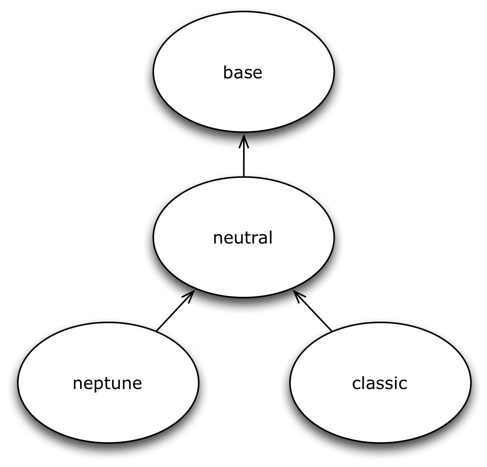
3.4. Overview Themes
3.4.1. Base Theme
When creating your own theme, you typically wouldn’t extend
from Base, although it is possible.
When you extend from Base, you have to style every Ext JS
component yourself. It will cost you more time but the
result is that you have a fully custom theme.
It contains the bare minimum set of CSS rules that are absolutely required for Ext JS Components and Layouts to work correctly.
The Base Theme is subclassed by all other themes.
3.4.2. Neutral Theme
Contains all the Sencha variables and style rules
used by the custom themes.
The Neutral theme extends from the Base theme.
3.4.3. Neptune Theme
Modern borderless theme.
The Neptune theme extends form the Neutral theme.

3.4.4. Neptune RTL Theme Example
Text from right to left, support.

3.4.5. Classic Theme
Classic theme, replica of the old Ext 3 theme.
The Classic theme also extends form the Neutral theme.

3.4.6. Classic Themes
Two other themes, gray and accessibility, extend from the classic theme.
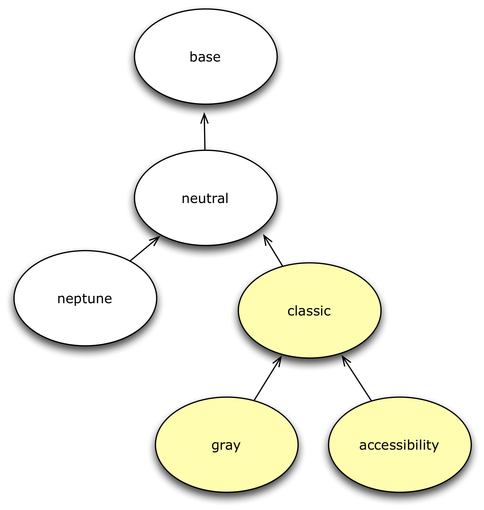
3.4.7. Gray Theme
Classic theme with a gray base color.
The Gray theme extends from the Classic theme.

3.4.8. Accessibility Theme
Classic theme optimized for accessibility.
The Accessibility theme extends from the Classic theme.
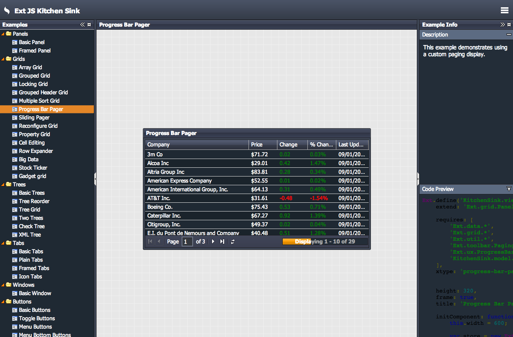
3.4.9. FUTURE: Neptune Touch Theme
Comming soon.
Touch support.
(for example, icons are bigger)

3.4.10. FUTURE: Crisp Touch Theme
Comming soon.
Touch support.
(for example, icons are bigger)

3.5. Switching themes
When you generate an application with Sencha Cmd,
by default the Classic theme is used.
How can you switch themes?
3.5.1. Don’t touch the <style> tag
What’s common in lots of web applications, is not so common in Ext JS.
When you want to switch your theme, you do not change
the <style> in the index.html file.

3.5.2. How to switch?
Since Ext 4.2.2. and Sencha Cmd 4,
the easiest way to switch a theme in your application, is by adding the
"theme" property to myapp/app.json.
{
"name": "ExtReader",
"requires": [],
"theme" : "Goggles",
}
Optional values are
-
ext-theme-classic
-
ext-theme-gray
-
ext-theme-access
-
ext-theme-neptune
-
[your own custom theme?]
3.5.3. How to switch?
Before Ext 4.2.2. & Sencha Cmd 4; you had to switch an Ext 4.x theme by opening
a hidden sencha config file.
To configure your app to use a different theme,
change the following line in [myapp]/.sencha/app/sencha.cfg
app.theme=ext-theme-classic
3.5.4. Example

3.5.5. Enable hidden files
Can’t find the .sencha hidden folder?
Try to enable hidden files in your OS.
Mac OSX
Windows 7
-
Go to: Control Panel > Appearance and Personalization >
Folders Options > Link: Show hidden files and folders
-
Select the radio button labeled Show hidden files, folders, and drives.
-
Remove the checkmark from the checkbox labeled Hide extensions for known file types.
-
Remove the checkmark from the checkbox labeled Hide protected operating system files (Recommended).

3.5.6. Build Theme
When you have already run a build of the app using the classic theme, you should clean the build directory.
sencha ant clean
Then build the app:
sencha app build
3.6. Lab: Switch from Classic to Neptune theme
Objectives
Steps
-
Confirm Sencha Cmd version. It should have version 4.0.x
sencha which
-
Confirm your app looks like [lab1_classic]. It has the Classic theme by default and no specific app styling.
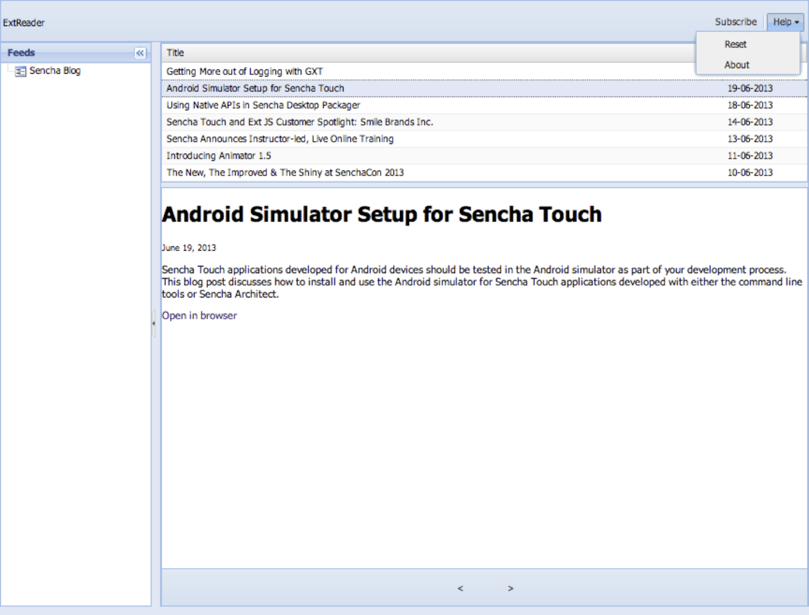
-
Open with your editor the following file /extreader/.sencha/app/sencha.cfg
Please note, the .sencha folder is a hidden folder.
You need to change the visibility of hidden folders for your OS.
*Mac users*:
+
Make hidden files visible.
To achieve this, type the following command in your terminal: +
`defaults write com.apple.finder AppleShowAllFiles TRUE` +
`killall Finder` +
(running these commands with FALSE will disable showing hidden files again)
*Windows users*:
+
TODO
-
Switch the app.theme to the out of the box Neptune theme:
# The name of the package containing the theme scss for the app
app.theme=ext-theme-classic
to
app.theme=ext-theme-neptune
-
Build the app, to see the changes:
Run the following command on the CLI, from the extreader folder:
sencha app build
Your ExtReader application should look like [lab1_neptune]:
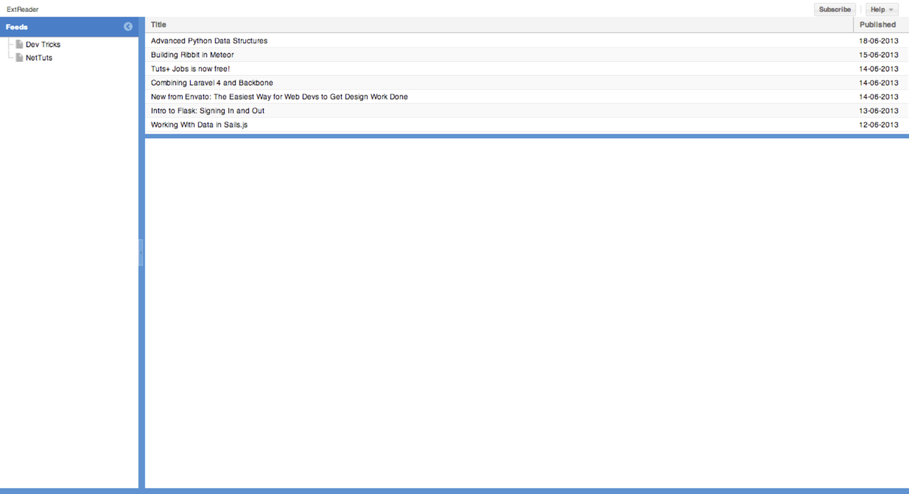
Generating custom themes
4.1. Objectives
-
Learn how to generate themes
-
Understand the package folder structure
-
Learn how to extend from Sencha themes
4.2. Generating themes
When you want to create a new custom theme, you can
generate a starting point with Sencha Cmd.
4.2.1. About the Command Line
Sencha Cmd is a tool on the command line (CLI).
You will use your Windows Console or Mac Terminal for this.
Windows
-
Start > Run
-
Type: cmd and press ok
Mac OSX
4.2.2. About Sencha Cmd
Sencha Cmd is a command-line tool that makes it quick and easy to do several application-development tasks.
-
Generate commands
-
Generate workspaces
-
Generate apps
-
Generate themes
-
and more…
-
Build-in webserver
-
Build tools
4.2.3. Generate a theme
sencha generate theme MyTheme
This will generate a theme for the package folder structure.
4.2.4. Package folder structure
The folder structure of a theme looks like this:
[workspace/root folder]/packages/mytheme/
-
package.json
This is the package properties file. It tells Sencha Cmd certain things about the package like its name, version, and dependencies (other packages that it requires).
-
build
The build of the theme
-
overrides
This directory contains any JavaScript overrides to Ext JS Component classes that may be required for theming those Components.
-
resources
This directory contains images and other static resources that your theme requires.
-
sass
-
etc
contains additional utility functions or mixins
-
src
contains Sass rules and UI mixins
-
var
contains Sass variables
4.3. Extending themes
A new generated theme always extends from the Classic theme.
When you want to inherit from the Neptune theme instead
you will need to change the extend.
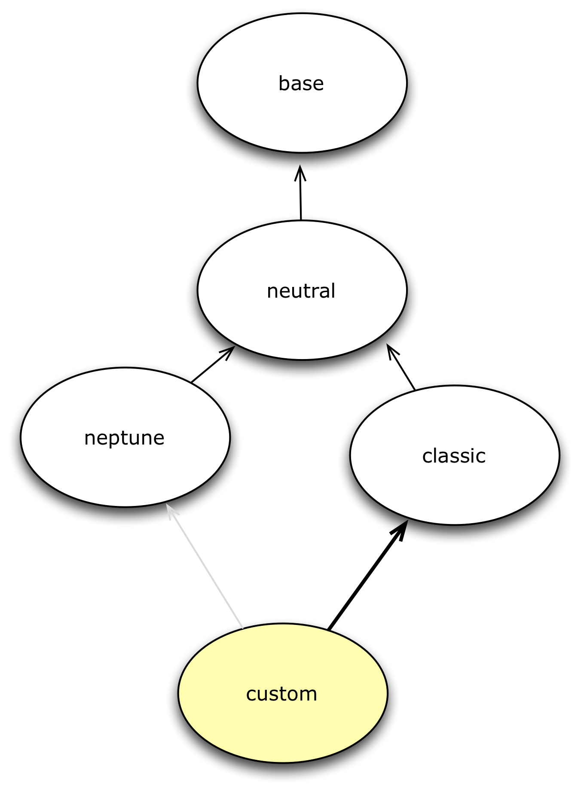
4.3.1. Change the extend
To change the inheritance of the custom theme. Open
/packages/MyTheme/package.json
{
"name": "MyTheme",
"type": "theme",
"creator": "Lee Boonstra",
"version": "1.0.0",
"compatVersion": "1.0.0",
"local": true,
"requires": [],
"extend": "ext-theme-neptune" //ext-theme-classic
}
4.3.2. Refresh the app
You now need to refresh your application.
This ensures that the correct theme JavaScript files are included in the application’s "bootstrap.js" file so that the application can be run in development mode.
Run from the app directory the following command:
sencha app refresh
Lab: Generate custom theme
Objectives
Steps
-
Generate a theme
Run the following command on the CLI, from the extreader folder.
sencha generate theme Goggles
-
Build the theme, to get an overview of all the components
Run the following command on the CLI, from the extreader folder:
sencha theme build Goggles
-
Review your theme folder structure
Browse to advancedtheming/packages/Goggles/build folder and review all the generated files.
This will generate a custom theme, but it still has the looks of the Classic theme.
Lab: Extend from the Neptune theme
Objectives
Steps
-
Extend from the Neptune theme:
Open packages/Goggles/package.json and change the extend to ext-theme-neptune.
-
Change the creator name to your name
-
Open with your editor the sencha config file /extreader/.sencha/app/sencha.cfg
-
Switch the app.theme to the out of the new Goggles theme
(See Lab 1)
-
Build the app, to see the changes
Run the following command on the CLI, from the extreader folder:
sencha app build
About Sass & Compass
7.1. Objectives
-
Working with Sass
-
Comments
-
File structure
-
Nesting
-
Variables
-
Interpolation
-
Math & Colors
-
Mixins
-
Directives
-
Extends
Sencha CSS Variables
8.1. Objectives
-
Understanding Sencha Global variables
-
Understanding Sencha Component variables
-
Implementing Sencha CSS variables
-
Working with the app watch command
8.2. Introduction
As we learned from the lecture, Sass variables are very powerful.
$component-bg: blue;
.panel {
background: $component-bg;
}
.panel { background: blue; }
8.3. Sencha CSS variables
Sencha has their own Sass variables set in the Neutral theme.
Therefore we can use these CSS variables to customize our own
designs.
8.4. 2 types of variables
+
* Global CSS variables
+
Apply to the overall Stylesheet
* Component CSS variables
+
Apply to an Ext component
8.5. Global Vars
8.5.1. API Docs
Global CSS vars can be found in the API Docs to get
an exact overview.
http://docs.sencha.com/extjs/4.2.1/#!/api/Global_CSS

8.5.2. Where to implement
here:
packages/<theme-name>/sass/etc/all.scss
We have seen that this file grows and it’s getting
harder to maintain. When you want to structure your Stylesheets,
a better a location to save global vars would be:
packages/<theme-name>/sass/var/Component.scss
8.5.3. Example: Base-color
The base background color to be used throughout the theme (like backgrounds, panel headers etc…).
packages/MyTheme/sass/etc/all.scss
$base-color: green;
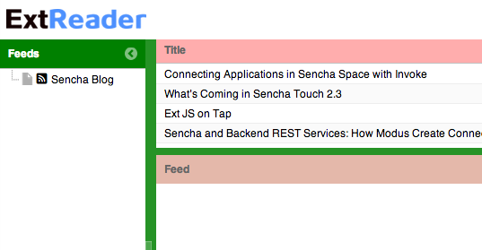
8.5.4. Example: Neutral-color
The neutral background color to be used throughout the theme. (like buttons, headers etc…),
as an alternative to the $base-color.
Defaults to: #dcdcdc
packages/MyTheme/sass/etc/all.scss
$neutral-color: #ccc
8.5.5. Overview vars
There are much more global vars available.
-
$base-color
-
$base-gradient
-
$body-background-color
-
$color
-
$css-shadow-border-radius
-
$font-family
-
$font-size
-
$image-search-path
-
$include-content-box
-
$include-default-uis
-
$include-not-found-images
-
$include-rtl
-
$neutral-color
-
$prefix
-
$relative-image-path-for-uis
-
$slicer-image-extension
-
$theme-resource-path
8.5.6. Vars to exclude browsers
By default Ext JS includes all browsers,
these variables are set to true. However if you don’t support
a particular browser you can disable these so the file size
of your Stylesheet will become smaller.
-
$include-chrome
-
$include-ff
-
$include-ie
-
$include-opera
-
$include-safari
-
$include-webkit
8.6. Component variables
8.6.1. API Docs
Component CSS vars can be found in the API Docs to get
an exact overview.
For example the CSS vars for buttons:
http://docs.sencha.com/extjs/4.2.1/#!/api/Ext.button.Button

8.6.2. Where to implement
here:
packages/<theme-name>/sass/etc/all.scss
We have seen that this CSS file grows and it’s getting
harder to maintain. When you want to structurize your Stylesheets,
a better a location to save component vars in a structure,
the same structure of used by the framework.
packages/<theme-name>/sass/var/button/Button.scss
(Since Ext.button.Button maps to /src/button/Button.js)
8.6.3. Example: Button
packages/MyTheme/sass/var/button/Button.scss
$button-default-base-color: green;
$button-default-border-color: blue;
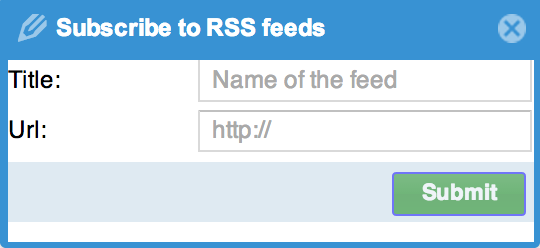
8.6.4. Overview Components with vars
Note that components that inherit from
other components; will also inherit the styles
set by variables.
8.6.5. Form components with vars
8.6.6. Grid components with vars
-
Ext.grid.column.Action
-
Ext.grid.column.CheckColumn
-
Ext.grid.column.Column
-
Ext.grid.column.RowNumberer
-
Ext.grid.header.Container
8.7. App Watch
As an alternative to compass watch, Sencha Cmd has sencha app watch.
Run this command on the CLI and it starts polling for changes.
On every change made in the JavaScript or CSS, the system will auto build
the app for you.
sencha app watch
Lab: Create the Goggles Theme
Objectives
Steps
-
Open with your editor the following file:
/packages/Goggles/sass/etc/all.scss
-
On the top of your file, define the following set of variables
/* my variables */
$red: #d14836;
$gray: #f5f5f5;
$yellow: #ffff00;
$white: #fff;
$blue: #15c;
-
Below your set of variables set the base-color, to $gray:
/* default styles */
$base-color: $gray;
-
Compile your stylesheet
On the CLI enter the following command from the extreader folder:
sencha ant sass
You can use this command everytime you want to test your stylesheet.
Just press the up key on the CLI to go back to your previous command.
With the new Sencha Cmd 4 version it’s possible
to watch your stylesheet for changes. Changes
in the Sass file will be automatically compiled to CSS files:
sencha app watch
-
*Verify your app looks like the image [lab4_goggles]

-
Open the API Docs
http://docs.sencha.com/extjs/4.2.1/#!/api/Global_CSS
-
Create the following Global_CSS variables
-
The neutral-color should be set to $gray
-
The default text color should be set to a 60% darker variant of gray. (darken($gray,60%))
-
The font should be set to Arial, sans-serif, with a fontsize of 13px.
-
Open with your browser the API Docs for Toolbars
http://docs.sencha.com/extjs/4.2.1/ and search for Ext.toolbar.Toolbar
Click on the CSS vars button and review the set of styles which are available for all toolbar components.
-
Create the following vars
-
Start with the comment: /* toolbars */
-
Set the background color for the toolbar, to variable $gray.
-
Test your stylesheet; you should notice a gray top toolbar.
-
Open with your browser the API Docs for Buttons
http://docs.sencha.com/extjs/4.2.1/ and search for Ext.button.Button
Click on the CSS vars button and review the set of styles which are available for all button components.
-
Create the following vars
-
Start with the comment: /* buttons */
-
All buttons in the toolbar should have a background color $gray and a border color that is 10% darker then the normal $gray.
-
Both buttons, default and toolbar buttons should have the background-gradient set to the string: none.
-
Set a padding to all small buttons to 8px.
-
All default buttons, should have a $red background color. over, pressed and focus buttons can have a 10% darker red background color.
-
All default buttons with a disabled state should have a 10% lighter color.
-
Compile and test your stylesheet, you should notice gray buttons in your toolbar. When you click on the subscribe button, you should see a form with a reddish button.
-
Open with your browser the API Docs for Panels
http://docs.sencha.com/extjs/4.2.1/ and search for Ext.panel.Panel
Click on the CSS vars button and review the set of styles which are available for all panel components.
-
Create the following vars
-
Start with the comment: /* panels */
-
Set the border width of the frame to 0.
-
Set the body border width to 0.
-
Open with your browser the API Docs for Panel Headers
http://docs.sencha.com/extjs/4.2.1/ and search for Ext.panel.Header
Click on the CSS vars button; and review the set of styles which are available for all panel header components.
-
Create the following vars
-
Set the padding for the header to: 10px 5px
-
Set the header background-color to an 8% darker red.
-
Compile and test your stylesheet, you should see a tree panel with a red header.
-
Open with your browser the API Docs for Windows
http://docs.sencha.com/extjs/4.2.1/ and search for Ext.window.Window
Click on the CSS vars button and review the set of styles which are available for all window components.
-
Create the following vars
-
The window-header padding should be set to 10px 5px;
-
The window-header-background-color should be set to an 8% darker red.
-
Compile and test your stylesheet, when you click on the subscribe button, you should see a nice popup window with a reddish header.
-
Open with your browser the API Docs for Grid Panels
http://docs.sencha.com/extjs/4.2.1/ and search for Ext.grid.Panel
Click on the CSS vars button and review the set of styles which are available for all grid components.
-
Create the following vars
-
The grid header will get a border color of $white.
-
The grid header will also get a padding of 12px 8px and a color that is 10% darker then the default gray.
-
Next step is to set the row-cell background color and the row-cell-alt background color both to a 3% darker gray.
-
The row-cell over color will be a 5% darker gray.
-
The row-cell border color will be a 10% darker gray
-
The row-cell selected background-color, should be a 40% lighter yellow color.
-
The grid-cell-inner padding should be set to 8px.
-
Compile and test your stylesheet, you should see a nice gray styled grid.
-
The last step is to create some custom styles for the tree panel
As you can see, the tree is already styled. This is because the treepanel extends from Ext.panel.Table and Ext.panel.Table, therefore it reuses a lot of the same styles as the grid does. Let’s write our own custom styles
Take over the below CSS code and use Sass nesting
http://sass-lang.com/docs/yardoc/#nesting for readability:
.x-tree-panel .x-tree-icon,
.x-tree-panel .x-tree-elbow-img {
display: none;
}
.x-tree-panel .x-grid-cell {
background: $white;
}
.x-tree-panel .x-grid-row-selected .x-grid-td {
background: white;
}
.x-tree-panel .x-grid-row-selected .x-tree-node-text {
font-weight: bold;
}
.x-tree-panel .x-grid-row-selected {
color: red;
}
-
Compile and preview your stylessheet
By now you should see your own custom tree panel, with white background cells. If you want to take a peek into the solution files, check the following file: /packages/Lab4Solution/sass/etc/all.scss
When you want to test this solution theme, just switch themes in your extreader/.sencha/app/sencha.cfg, set app.theme to Lab4Solution (app.theme=Lab4Solution) and run a sencha app build.

Sencha Mixins
10.1. Objectives
-
Implementing Panel UIs
-
Implementing Toolbar UIs
-
Implementing Window UIs
-
Implementing Button UIs
10.2. Introduction
As we learned from the lecture, Sass mixins can be very handy:
@mixin custom-button-ui($color) {
background-color: $color;
&:hover {
background-color: lighten($color, 20%);
}
}
.x-btn.custom {
@include custom-button-ui(red)
}
.x-btn.custom { background-color: red; }
.x-btn.custom:hover{ background-color: #ff6666; }
10.3. Sencha UIs
Sencha has their own Sass mixins set in the Neutral theme.
Therefore we can use these mixins (sencha uis) to customize our own
skins.
For example, Sencha UIs can be handy for when you have a blue Neptune theme
and only some toolbars needs to be green instead of blue.

10.4. Mixin vs CSS overwrite
extjs-toolbar-ui(
'greentoolbar',
$background-color: 'green'
//more configs
);
{
xtype: 'toolbar',
ui: 'greentoolbar',
//more configs
}
.green {
background: 'green';
}
{
xtype: 'toolbar',
cls: 'green',
//more configs
}
10.4.1. Sencha UI
Advantages
-
Creates a new skin
-
Set every CSS rule for this specific component
-
Automatically cross browser compatible
.Disadvantages
-
Can increase the file size of your CSS
-
Can be difficult to implement
10.4.2. CSS overwrite on class name
Advantages
-
Easy solution
-
Won’t increase the CSS much
.Disadvantages
-
Overwrites are visible in the compiled CSS
-
Hard to maintain
-
You will need to understand the Ext JS DOM
10.4.3. Conclusion
Sencha UI mixins are great when these are repetitive used in your theme.
For example: a blue theme, that has blue and red buttons.
CSS overwrites are handy to make a certain component unique.
For example: on the start screen, the new button is bigger and has a different color.
10.5. Mixins
Like variables, there are two types of mixins.
-
Global Mixins
-
Component Mixins
10.6. Global Mixins
But there is just one global mixin…

http://localhost/extjs4.2.2/docs/#!/api/Global_CSS
10.6.1. Where to implement
packages/<theme-name>/sass/etc/all.scss
10.6.2. Mixin: Background-gradient
.app {
@include background-gradient(#808080, matte, left);
}
http://docs.sencha.com/extjs/4.2.1/#!/api/Global_CSS-css_mixin-background-gradient
10.7. Component mixins
The following Ext components have their own mixins:
10.7.1. Where to implement
packages/<theme-name>/sass/etc/all.scss
We have seen that this file grows and it’s getting
harder to maintain. When you want to structure your Stylesheets,
a better a location to save global vars would be:
packages/<theme-name>/sass/src/Component.scss
10.7.2. API Docs
You can figure out how to configure the mixins by checking the API Docs.

10.7.3. Mixin: Panel UI
packages/<theme-name>/sass/src/panel/Panel.scss
@mixin extjs-panel-ui(
$ui-label,
$ui-border-color: $panel-border-color,
$ui-border-radius: $panel-border-radius,
$ui-border-width: $panel-border-width,
$ui-padding: 0,
$ui-header-color: $panel-header-color,
$ui-header-font-family: $panel-header-font-family,
$ui-header-font-size: $panel-header-font-size,
$ui-header-font-weight: $panel-header-font-weight,
$ui-header-line-height: $panel-header-line-height,
$ui-header-border-color: $panel-header-border-color,
$ui-header-border-width: $panel-header-border-width,
$ui-header-border-style: $panel-header-border-style,
$ui-header-background-color: $panel-header-background-color,
$ui-header-background-gradient: $panel-header-background-gradient,
$ui-header-inner-border-color: $panel-header-inner-border-color,
$ui-header-inner-border-width: $panel-header-inner-border-width,
$ui-header-text-padding: $panel-header-text-padding,
$ui-header-text-transform: $panel-header-text-transform,
$ui-header-padding: $panel-header-padding,
$ui-header-icon-width: $panel-header-icon-width,
$ui-header-icon-height: $panel-header-icon-height,
$ui-header-icon-spacing: $panel-header-icon-spacing,
$ui-header-icon-background-position: $panel-header-icon-background-position,
$ui-header-glyph-color: $panel-header-glyph-color,
$ui-header-glyph-opacity: $panel-header-glyph-opacity,
$ui-tool-spacing: $panel-tool-spacing,
$ui-tool-background-image: $panel-tool-background-image,
$ui-body-color: $panel-body-color,
$ui-body-border-color: $panel-body-border-color,
$ui-body-border-width: $panel-body-border-width,
$ui-body-border-style: $panel-body-border-style,
$ui-body-background-color: $panel-body-background-color,
$ui-body-font-size: $panel-body-font-size,
$ui-body-font-weight: $panel-body-font-weight,
$ui-background-stretch-top: $panel-background-stretch-top,
$ui-background-stretch-bottom: $panel-background-stretch-bottom,
$ui-background-stretch-right: $panel-background-stretch-right,
$ui-background-stretch-left: $panel-background-stretch-left,
$ui-include-border-management-rules: $panel-include-border-management-rules,
$ui-wrap-border-color: $panel-wrap-border-color,
$ui-wrap-border-width: $panel-wrap-border-width
);
http://docs.sencha.com/extjs/4.2.1/#!/api/Ext.panel.Panel-css_mixin-extjs-panel-ui
10.7.4. Mixin: Window UI
packages/<theme-name>/sass/src/window/Window.scss
@mixin extjs-window-ui(
$ui-label,
$ui-padding: $window-padding,
$ui-border-radius: $window-border-radius,
$ui-border-color: $window-border-color,
$ui-border-width: $window-border-width,
$ui-inner-border-color: $window-inner-border-color,
$ui-inner-border-width: $window-inner-border-width,
$ui-header-color: $window-header-color,
$ui-header-background-color: $window-header-background-color,
$ui-header-padding: $window-header-padding,
$ui-header-font-family: $window-header-font-family,
$ui-header-font-size: $window-header-font-size,
$ui-header-font-weight: $window-header-font-weight,
$ui-header-line-height: $window-header-line-height,
$ui-header-text-padding: $window-header-text-padding,
$ui-header-text-transform: $window-header-text-transform,
$ui-header-border-color: $ui-border-color,
$ui-header-border-width: $window-header-border-width,
$ui-header-inner-border-color: $window-header-inner-border-color,
$ui-header-inner-border-width: $window-header-inner-border-width,
$ui-header-icon-width: $window-header-icon-width,
$ui-header-icon-height: $window-header-icon-height,
$ui-header-icon-spacing: $window-header-icon-spacing,
$ui-header-icon-background-position: $window-header-icon-background-position,
$ui-header-glyph-color: $window-header-glyph-color,
$ui-header-glyph-opacity: $window-header-glyph-opacity,
$ui-tool-spacing: $window-tool-spacing,
$ui-tool-background-image: $window-tool-background-image,
$ui-body-border-color: $window-body-border-color,
$ui-body-background-color: $window-body-background-color,
$ui-body-border-width: $window-body-border-width,
$ui-body-border-style: $window-body-border-style,
$ui-body-color: $window-body-color,
$ui-background-color: $window-background-color,
$ui-force-header-border: $window-force-header-border,
$ui-include-border-management-rules: $window-include-border-management-rules,
$ui-wrap-border-color: $window-wrap-border-color,
$ui-wrap-border-width: $window-wrap-border-width
);
http://docs.sencha.com/extjs/4.2.1/#!/api/Ext.window.Window-css_mixin-extjs-window-ui
10.7.5. Mixin: Toolbar UI
packages/<theme-name>/sass/src/toolbar/Toolbar.scss
@mixin extjs-toolbar-ui
$ui,
$background-color: $toolbar-background-color,
$background-gradient: $toolbar-background-gradient,
$border-color: $toolbar-border-color,
$border-width: $toolbar-border-width,
$scroller-cursor: $toolbar-scroller-cursor,
$scroller-cursor-disabled: $toolbar-scroller-cursor-disabled,
$scroller-opacity-disabled: $toolbar-scroller-opacity-disabled,
$tool-background-image: $toolbar-tool-background-image
);
http://docs.sencha.com/extjs/4.2.1/#!/api/Ext.toolbar.Toolbar-css_mixin-extjs-toolbar-ui
10.7.6. Button UIs
Different types of Button UIs
-
$extjs-button-large-ui
-
$extjs-button-medium-ui
-
$extjs-button-small-ui
-
$extjs-button-toolbar-large-ui
-
$extjs-button-toolbar-medium-ui
-
$extjs-button-toolbar-small-ui
10.7.7. extjs-button-ui
Default Button UI
packages/<theme-name>/sass/src/button/Button.scss
http://docs.sencha.com/extjs/4.2.1/#!/api/Ext.button.Button-css_mixin-extjs-button-ui
Lab: Creating Custom UIs
Objectives
-
Implement Button UIs
-
Implement Panel UIs
-
Implement Toolbar UIs
-
Implement Window UIs
11.1. Button UI’s
See API Docs: http://docs.sencha.com/extjs/4.2.1/#!/api/Ext.button.Button
Steps
-
Create a new file Component.scss
Create this file in packages/Goggles/sass/src
-
Create the button mixin extjs-button-small-ui
-
Give this mixin the name: blue ($ui)
-
Give this mixin the following background $background-color: lighten($blue, 20%)
-
Give this mixin a background over color, a 10% darker $blue
-
Give this mixin the background disabled color, a 40% lighter $blue
-
Set the border-radius to 4px
-
Set the color to white
-
Set the glyph-color to white
-
Set the padding to 4px
-
Copy and paste the previous mixin and change the mixin to ext-button-medium-ui
The difference is the border-radius, which should be set to 5px and the padding which should be set to 6px.
-
Copy and paste the previous mixin and change the mixin to ext-button-toolbar-medium-ui
-
Copy and paste the previous mixin and change the mixin to ext-button-large-ui
The difference is the border-radius, which should be set to 6px and the padding which should be set to 8px.
-
Assign the blue button mixin to the previous and next buttons
Open app/view/Viewport, on the place indicated by the comment (the previous and next buttons), add the ui: blue.
-
Assign the blue button mixin to the OK button
Open app/view/Header.js, on the place indicated by the comment (the OK button of the messagebox), add the ui: blue.
-
Navigate on the CLI to the project folder
-
Build the application
Make sure your app is automatically compiling to CSS by running the following command on the CLI sencha app watch
-
Preview your application
You should see blue previous and next buttons in the bottom toolbar. You should also see a blue OK button, when pressing the Help > About button.
11.2. Panel UIs
See API DOCS: http://docs.sencha.com/extjs/4.2.1/#!/api/Ext.panel.Panel
Steps
-
Create the following mixin for Panels, see [code6_panelui]
@include extjs-panel-ui(
'light',
$ui-header-color: lighten(#15c, 20%),
$ui-header-background-color: #fff,
$ui-header-line-height: 14px,
$ui-header-font-size: 12px,
$ui-header-font-weight: bold,
$ui-border-color: #fff,
$ui-border-radius: 4px,
$ui-body-background-color: #fff,
$ui-body-font-size: 14px,
$ui-padding: 10px
);
-
Assign the light panel mixin to the feed panel
Open app/view/Viewport.js, on the place indicated by the comment (the feed panel), add the ui: light.
11.3. Toolbar UIs
See API DOCS: http://docs.sencha.com/extjs/4.2.1/#!/api/Ext.toolbar.Toolbar
Steps
-
Create the following mixin for Toolbars, see [code6_toolbarui]
@include extjs-toolbar-ui(
'gray',
$background-color: lighten($gray, 10%),
$border-width: 0
);
-
Assign the gray toolbar mixin to the toolbar
Open app/view/Viewport.js, on the place indicated by the comment (the toolbar), add the ui: gray.
11.4. Window UIs
See API DOCS: http://docs.sencha.com/extjs/4.2.1/#!/api/Ext.window.Window-css_mixin-extjs-window-ui
Steps
-
Create the following mixin for Windows, see [code6_windowui]
@include extjs-window-ui(
'blue',
$ui-header-font-size: 12px,
$ui-header-font-weight: bold,
$ui-header-color: #fff,
$ui-header-background-color: lighten(#15c, 20%),
$ui-border-color: #fff,
$ui-border-radius: 4px,
$ui-body-background-color: #fff
);
-
Assign the blue window mixin to the messagebox
Open app/view/Header.js, on the place indicated by the comment (the messagebox), add the ui: blue.
-
Preview the application
Your ExtReader app should have the looks of [lab6_uis].
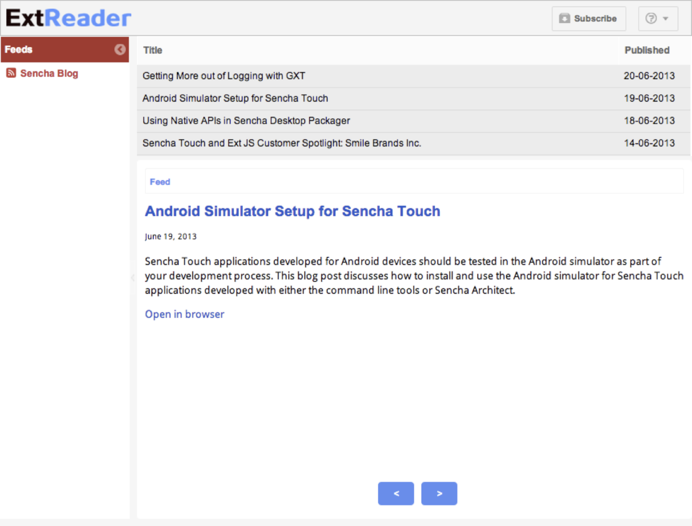
Implementing assets
12.1. Objectives
-
Learn how to implement images
-
Lean about paths to resources
-
Learn how to implement custom fonts
-
Learn how to implement custom icons
12.2. Implementing Images
There are a couple of ways of implementing images in Ext JS
-
Implementing an image by using the html tag.
Easy but dirty.
-
Implementing an image by using Ext.Img class.
Very powerful.
-
Implementing a background image in the CSS
Structured.
12.2.1. Folder structure
Where to save the images?
When app specific:
[workspace]/resources/ folder.
When global theme:
[workspace]/packages/[theme]/resources/ folder.
12.2.2. Image HTML tag
items: [{
xtype: 'container',
html: '<img src="resources/logo.png" height="25" alt="ExtReader"/>'
}]
12.2.3. Image Ext.Img class
items:[{
xtype: 'image',
src: 'resources/logo.png',
alt: 'ExtReader',
height: 25
}]
12.2.4. Background image in CSS
items: [{
xtype: 'container',
cls: 'mybackground'
}]
.mybackground {
background: #fff url('background.png') repeat-x;
}
12.2.5. Paths to resources
You don’t need to worry about paths to images in Ext JS since it’s part of the application build process.
When building the app, the global theme images and the app specific images will be automatically copied over to the resources build folder. (build/[appname]/resources)
Note: subfolders will be copied too!
12.2.6. Paths global
/* red image: resources/backgrounds/red.png */
.bgred {
background: url('backgrounds/red.png') repeat-x;
}
/* yellow image: resources/yellow.png */
.footer {
background: url('yellow.png');
}

12.2.7. Paths app specific
/* blue image: packages/[mytheme]/resources/backgrounds/blue.png */
.bgblue {
background: url('backgrounds/blue.png') repeat-x;
}

12.2.8. Paths in build
Images saved in packages/[mytheme]/resources
and images saved in [myapp]/resources/.
will be copied to the build/[appname]/resources folder.

12.2.9. Paths to resources
Under the roots, this happens also with paths in Ext.Img classes and image tags and other resources such as fonts.
However, while developing you would point images to the /resources/ folder, since you don’t want to build every time while developing.
Once you build, Sencha Cmd will take care.
12.2.10. Base64 encode instead
Images can be saved to Base64 strings. (Binary to ASCII Text).
It’s a technique what’s been used for years for sending email
image attachments. When you are not familiair with Base64 strings, they look like these:
data:image/png;base64,<LONG BASE64 STRING WITH ENCODED DATA>"
An advantage of a string like this, is that you can cache it,
maybe you want to save it in a database.
Instead of an URL to a path you pass in the Base-64 string.
12.2.11. Overriding images
When you are extending from other themes, some components contain images that are
inherited from a parent theme.
In some cases you may need to override an image. This can be easily done by placing the desired image in packages/[mytheme]/resources/images/ and giving it the same name as the image it is intended to override.
For example, let’s change the info icon of the MessageBox component. Save the following image as packages/[mytheme]/resources/images/shared/icon-info.png
=== Implementing custom fonts
.The following steps are required to implement a custom font.
-
Download a font-face kit
-
Create fonts folder in resources folder.
-
Implement font in Sass
-
Assign font
-
Build
12.2.12. About @font-face
@font-face is a CSS technique used nowadays to implement custom
web fonts. Where with system fonts it picks the font if available in your OS, @font-face downloads the font from the Internet.
Unfortunately the major browsers can’t come up with one web font solution. Therefore you have to embed multiple web font extensions
into your Stylesheet. See [styles_fontfaceoverview].
12.2.13. Compatibility
Table 1. Cross-browser compatibility overview of font-face
| Browser |
TTF |
EOT |
WOFF |
SVG |
Firefox |
X |
_ |
X |
_ |
Google Chrome |
X |
_ |
X |
X |
Safari |
X |
_ |
X |
X |
Mobile Safari |
X |
_ |
X |
X |
IE10 |
_ |
X |
X |
_ |
Android Browser |
X |
_ |
_ |
X |
BlackBerry Browser |
X |
_ |
X |
X |
12.2.14. Where to get fonts from?
Download an @font-face kit
A font service:
12.2.15. Implement font in Sass
@font-face {
font-family: 'DroidSansBold';
src: url('../resources/fonts/DroidSans-Bold-webfont.eot');
src: url('../resources/fonts/DroidSans-Bold-webfont.eot?#iefix') format('embedded-opentype'),
url('../resources/fonts/DroidSans-Bold-webfont.woff') format('woff'),
url('../resources/fonts/DroidSans-Bold-webfont.ttf') format('truetype'),
url('../resources/fonts/DroidSans-Bold-webfont.svg#DroidSansBold') format('svg');
font-weight: normal;
font-style: normal;
}
12.2.16. Base64 for fonts!
Yes it’s possible to Base64 encode fonts!
To get a Base64 font, upload and encode every font extension
to an encoder:
http://www.opinionatedgeek.com/dotnet/tools/base64encode/
It will present you the Base64 for each font file.
These Base64 strings you can implement in your Sass.
12.2.17. Base64 font example
@font-face{
font-family: "DroidSansBold";
src: url(data:font/tff;base64,<here>) format('TrueType'),
url(data:font/svg;base64,<here>) format('svg'),
url(data:font/eot;base64,<here>) format('eot'),
url(data:font/woff;base64,<here>) format('woff');
}
12.2.18. Assign font
Set a CSS class on a component, to target it from the CSS.
.mycomponent {
font-family: 'DroidSansRegular';
line-height: 1.6em;
}
12.2.19. Px or Em ?
Pixels
Pixels (px) are fixed-size units that are used in screen media. One pixel is equal to one dot on the computer screen (the smallest division of your screen’s resolution). Many web designers use pixel units in web documents in order to produce a pixel-perfect representation of their site as it is rendered in the browser.
Ems
"Ems" (em): The em is a scalable unit that is used in web document media. An em is equal to the current font-size, for instance, if the font-size of the document is 16px, 1em is equal to 16px. Ems are scalable in nature, so 2em would equal 32px, .5em would equal 8px, etc.
In theory, using em instead of px will allow the layout to re-size more easily based on user preferences. But nowadays, modern browsers can resize px layouts as well as em layouts so it might not be as relevant as it was some years ago.
12.2.20. Px / Ems converters
When you think the calculation of ems is annoying…
Let’s Sass calculate it for you!
@function em($target, $context: $base-font-size-em) {
@if $target == 0 { @return 0 }
@return $target / $context + 0em;
}
@function px($target, $context: $base-font-size) {
@if $target == 0 { @return 0 }
@return $target / $context + 0px;
}
$base-font-size: 15px;
12.2.21. Build
A build process is required in order to see the newly implemented fonts. This will copy and link the fonts to the build folder.
sencha app build
=== Implementing Glyps and Icons
.The following steps are required to implement a custom icon font.
-
Choose an icon font
-
Create a font pack
-
Download the icon font.
-
Implement icon font in Sass
-
Assign icon font
-
Build
12.2.22. About icon fonts
Icons delivered as a font file and mapped to (HEX) character codes.
Icon font can be embedded with CSS like any other custom font.
12.2.23. Icon fonts why?
Why icon fonts?
-
Icon Fonts are vectors.
Icons can easily change size and they are always best quality.
Perfect on Retina displays.
-
No need for Photoshop
Icon Fonts can change colors, shades, contrasts and have no background.
Customizable with CSS
-
Screen reader compatible
Font icons won’t spam your screen reader.
No additional markup is required.
12.2.24. Where to get icon fonts from?
http://icomoon.io/app
http://www.pictos.cc
http://fontello.com/
http://fortawesome.github.io/Font-Awesome/
Convert text to unicodes:
http://www.branah.com/unicode-converter
12.2.25. Create a font
Create your own font by selecting icons.
12.2.26. Example: IcoMoon


12.2.27. Example: Fontello

12.2.28. Implement icon font in Sass
This works exact the same as implementing any other font.
Sometimes the CSS file is included with the font kit download.
@font-face {
font-family: 'MyFont';
src: url('font/myfont.eot?22334');
src: url('font/myfont.eot?22334#iefix') format('embedded-opentype'),
url('font/myfont.woff?22334') format('woff'),
url('font/myfont.ttf?22334') format('truetype'),
url('font/myfont.svg?22334#myfont') format('svg');
font-weight: normal;
font-style: normal;
}
Again don’t worry about the paths, since it will be part of the build process.
12.2.29. About Glyphs
To assign custom icons to Ext JS components you can use the glyph config.
-
Specify the decimal code that maps to the unicode character
you choose while you’ve created the font pack.
You can convert the character to a decimal with converters:
http://www.branah.com/unicode-converter
-
Specify the name of the font.
glyph: '115@MyFont',
12.2.30. More about Glyphs
When no font is specified, the Pictos icon font will be used.
glyph: '71',
Use Ext.setGlyphFontFamily(); to set the icon font programmetically.
12.2.31. Out of the box glyhs
var buttons = [];
for (var i = 33; i < 127; i++) {
buttons.push({
xtype: 'button',
text: i,
scale: 'medium', // Try 'small' and 'large'
glyph: i + '@Pictos' // alternate config if Ext.setGlyphFontFamily() was not set
});
}
Ext.create('Ext.panel.Panel', {
renderTo: Ext.getBody(),
title: 'Sample',
height: 500,
width: 620,
defaults: {
xtype: 'button',
margin: 2
},
autoScroll: true,
items: buttons
});
12.2.32. Icon CSS Classes
Some components have no glyph property.
It’s still possible to create custom icons.
This trick can be done with the CSS pseudo selectors:
:before and :after that implement content
before or after the component in the DOM.
.myclass:before {
content: "C"; //character mapped to an icon
font-family: 'MyIconFont'; //icon font
color: red; //set additional colors or dimensions...
margin-right: 10px;
}
12.2.33. Image icons
It’s also possible to use images as icons.
-
icon - path to an image
-
iconCls - a CSS class specifying a background image
-
iconAlign - align icon to top, right, bottom and left
Ext.create('Ext.panel.Panel', {
title : 'Panel',
renderTo : Ext.getBody(),
height : 200,
bodyPadding : 16,
defaults : {
margin: 8
},
layout : 'vbox',
items : [{
xtype : 'button',
text : 'Sunny',
icon : 'resources/images/weather_sun.png'
}, {
xtype : 'button',
text : 'Rainy',
icon : 'resources/images/weather_rain.png',
iconAlign : 'right'
}]
});
12.2.34. Build
A build process is required in order to see the newly implemented fonts. This will copy and link the fonts to the build folder.
sencha app build
Lab: Implementing assets
Objectives
13.1. Implement images
Steps
-
Open with your editor the following file:
extreader/app/view/Header.js
-
Where indicated by the comment add an image tag that points to the following image
<img src="resources/logo.png" height="25" alt="ExtReader"/>
13.2. Implement custom fonts
Steps
-
Download a nice free font
For example: Droid Sans. Make sure you download the full webfont-kit
http://www.fontsquirrel.com/fonts/Droid-Sans
-
Unzip the package somewhere on your harddrive
-
Create a new fonts folder
Create this folder in: packages/resources
-
Copy all the fonts into the new folder
The packages/resources/fonts folder.
-
Open packages/Goggles/sass/etc/all.scss
-
Setup fontface for DroidSansRegular and DroidSansBold
/* fonts */
@font-face {
font-family: 'DroidSansRegular';
src: url('../resources/fonts/DroidSans-webfont.eot');
src: url('../resources/fonts/DroidSans-webfont.eot?#iefix') format('embedded-opentype'),
url('../resources/fonts/DroidSans-webfont.woff') format('woff'),
url('../resources/fonts/DroidSans-webfont.ttf') format('truetype'),
url('../resources/fonts/DroidSans-webfont.svg#DroidSansRegular') format('svg');
font-weight: normal;
font-style: normal;
}
@font-face {
font-family: 'DroidSansBold';
src: url('../resources/fonts/DroidSans-Bold-webfont.eot');
src: url('../resources/fonts/DroidSans-Bold-webfont.eot?#iefix') format('embedded-opentype'),
url('../resources/fonts/DroidSans-Bold-webfont.woff') format('woff'),
url('../resources/fonts/DroidSans-Bold-webfont.ttf') format('truetype'),
url('../resources/fonts/DroidSans-Bold-webfont.svg#DroidSansBold') format('svg');
font-weight: normal;
font-style: normal;
}
-
Now we will make sure that these fonts only apply for the main center panel
/* main feeds */
.main {
font-family: 'DroidSansRegular';
line-height: 1.6em;
h1 {
color: $blue;
font-family: Arial, sans-serif;
font-size: 20px;
line-height: 24px;
}
a {
color: $blue;
}
bold {
font-family: 'DroidSansBold';
}
}
-
Build the app
So the theme knows the font locations and test your application. Your app should contain the new font, in the main center panel.
13.3. Implement custom icons
Steps
-
Go to http://icomoon.io/app
-
Select the icons below, and download a package.
You will need the following icons:
-
an icon for RSS feeds - you will map this icon to the r character
-
an icon for the help button - you will map this icon to the h character
-
an icon for the subscribe button - you will map this icon to the s character
-
an icon for the form popup - you will map this icon to the e character
-
Setup the font pack
In the preferences screen select preferences, and give your font the name: ExtReader. Also check base64 encoding.
-
Unzip the icon font pack somewhere on your harddrive
-
Copy the font folder over
Copy it to the fonts folder: extreader/resources/fonts
. Copy the CSS rules of style.css
Copy it to: packages/sass/etc/ and rename it to all.scss. Start with a comment: //font icons
-
Open packages/sass/etc/all.scss and fix the path to resources/fonts/ExtReader.eot
-
Build the app
From now on the theme and the application know the icon font location.
13.3.1. Glyphs
Steps
-
Open extreader/app/view/Header.js
-
Indicated by the comment, create a glyph attribute
Point it to some decimal unicode and the Icon font:
-
The glyph for the subscribe button will map to the s character. Therefore you will need the decimal unicode that maps to the s character.
-
Use a converter to generate this: http://www.branah.com/unicode-converter
-
The s character will become an icon, when you use the correct font. Therefore also set the name font that should be used:
glyph: ‘115@ExtReader’,
-
Create a glyph for the help button
Indicated by the comment; the help icon should map to the h character.
ou may uncomment the line with: text: ‘Help’, in that case you will have a button with only an icon and no text.
+
Open extreader/controller/Main.js, where indicated by the comment, add a glyph that points to the e character of the iconfont.
13.3.2. Icon Classes
Steps
-
On the bottom of the extreader/sass/etc/all.scss stylesheet add the styles of <<code5_iconclasses>
.x-tree-node-text:before {
content: "r";
margin-right: 5px;
font-family: 'ExtReader';
}
This will make sure that every tree node (with class x-tree-node-text), has a little icon before the text. We set the content to the r character to map to the rss feed icon.
We do have to set a font that points to our icon font name, and we set a margin-right to align the icon nicely.
Sharing Themes
14.1. Objectives
14.2. Introduction
Multiple apps can share the same theme,
since themes are located in the packages folder.
image::resources/images/sharediagram1.png
14.3. App specific
Now in the previous example, it wouldn’t make much sense that
the Audio app has a Stylesheet that contains styles for the video
player.
So there must be a way to also save CSS styles on app level.
That’s why each generated app has an own sass folder:
app/sass/.
image::resources/images/sharediagram2.png
14.4. Global vs App specific
Styling that is not shared between applications belongs in the application itself, not in the theme. Sencha Cmd provides an easy way to add application-level styling by following the same pattern as theme styling. The application acts as the final level in the theme hierarchy. Applications can change theme variables, and they can add their own custom variables and rules for styling the application’s views.
Global themes are saved in the packages/sass folder.
App specific styles are saved in the myapp/sass/ folder.
14.5. Order of Loading.
-
First the Global Theme is loaded.
-
Then the app specific styles.
14.6. Global theme folderstructure
As we have seen in lecture; a Global theme has the following folderstructure.
-
sass
-
etc
contains additional utility functions or mixins
all.scss
-
src
contains Sass rules and UI mixins
button/Button.scss
panel/Panel.scss
…
-
var
contains Sass variables
button/Button.scss
panel/Panel.scss
…
The files in the src and var folders are organized according the folderstructure of the framework.
For example to style a Ext.grid.Panel you should create a folder and Sass file: grid/Panel.scss.
14.7. Is this structure for styles on app level the same?
No. It is different.
Although you could change it; in the (hidden) sencha config file:
myapp/.sencha/sencha.cfg
14.8. sencha.cfg
By default when you generate an application with Sencha Cmd,
it is configured that app specific styles map to the filestructure of your application.
myapp/.sencha/sencha.cfg
# The root namespace to use when mapping scss resources to js classes
# in the sass/src and sass/var directories
app.sass.namespace=ExtReader
14.9. App specific folderstructure
To organize app specific Sass files, you should map your app file structure.
For example:
-
sass
-
etc
contains additional utility functions or mixins
all.scss
-
src
contains Sass rules and UI mixins
view/Viewport.scss
view/Header.scss
view/Grid.scss
…
-
var
contains Sass variables
view/Viewport.scss
view/Header.scss
view/Grid.scss
…
src/view/Viewport.scss because of MyApp.view.Viewport
src/view/Header.scss because of MyApp.view.Header
src/view/Grid.scss because of MyApp.view.Grid.scss
14.10. Who is winning?
Ok, you’ve created a global theme and some app specific styles.
Let’s say you set a $base-color on both.
A blue $base-color in the global theme and a red $base-color in the app specific styles.
Who is winning?
14.11. Answer
You would think the app specific variable would win…
But this is not the case. The global theme will always win, unless you
allow variables to be overruled.
14.12. !default
The !default setting, can set a default value for a variable.
The !default setting can allow a variable in your global theme to be overruled by a variable
in an app specific theme.
It’s not the same as !important; that’s the opposite (but on CSS rules, not on Sass variables);
When you set this, you can not override the CSS rule. Therefore !important is a bad practice.
14.13. Example
See the next slides for an example of this works.
14.13.1. Create app specific styles
This app has a MyApp.view.Viewport class;
so we will apply the $base-color to this component on app level.
$base-color: red;
image::resources/images/share_red.png
14.13.2. Create a new theme
Assign a new theme to your app.
Every Ext view component extends from Ext.Component,
so we will apply the $base-color globally to this component.
$base-color: blue;
image::resources/images/share_blue.png
14.13.3. Overwrite global vars
Change the global theme to allow variable overwrites.
$base-color: blue !default;
image::resources/images/share_red.png
Lab: Organizing theme
Objectives
15.1. Organizing global variables
Steps
-
Start with watching the application, so the application will build automatically every time you hit save.
sencha app watch
-
Create var/Component.scss
-
Open packages/Goggles/etc/all.scss
-
Create a new file Component.scss in packages/Goggles/var/
-
Copy and paste:
-
Add suffix !default on the end of the variable of $base-color
to specify; this variable can be changed by a theme on app level.
-
Create var/toolbar/Toolbar.scss
-
Create var/button/Button.scss
-
* Create var/panel/Panel.scss*
-
Create a new file/folder panel/Panel.scss in packages/Goggles/var/
-
Copy and paste the panel variables
-
Add suffix !default on the end of the variable of $panel-header-background-color
to specify; this variable can be changed by a theme on app level.
-
Create var/window/Window.scss
-
Create var/grid/Panel.scss
15.2. Organizing global styles & mixins
Steps
-
Create src/Component.scss
-
Create src/tree/Panel.scss
-
Create a new file/folder tree/Panel.scss in packages/Goggles/src/
-
Copy and paste the styles for trees.
-
Copy and paste the panel ui mixin (from packages/Goggles/src/Component.scss) over to this file.
-
Create a new file & folder button/Button.scss
-
Create a new file & folder toolbar/Toolbar.scss
-
Create a new file & folder window/Window.scss
15.3. Organizing app specific variables
-
Create vars/view/Viewport.scss in your app.
-
Create a new file/folder view/Viewport.scss in extreader/sass/var/
-
Overwrite the global theme CSS rules.
The panel header background, will become blue.
The base-color will be a lighter gray.
$base-color: #f2f2f2;
$panel-header-background-color: #528cf1;
15.4. Organizing app specific styles
-
Create src/view/Viewport.scss in your app.
-
Create a new file/folder view/Viewport.scss in extreader/sass/src/
-
Copy and paste the icon font and the icon CSS classes over to the src/view/Viewport.scss file on app level.
Now these icons are only available for the Ext Reader app.
-
Build the application
Preview and test the template.
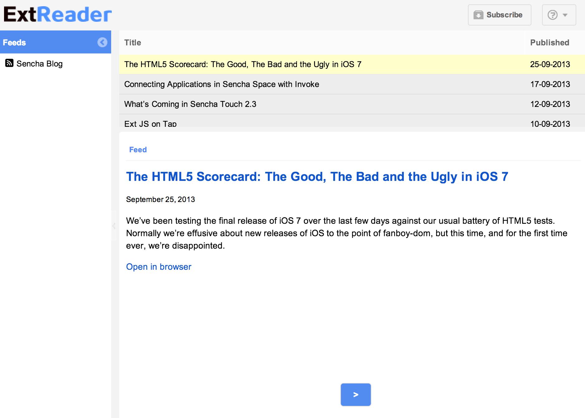
Performance
16.1. Objectives
16.2. Introduction
There are some tricks to improve performance of your web application that are related to your CSS styling.
The smaller your CSS Stylesheet, the better performance.
We will talk about the following topics:
16.3. Sencha app build
While building your application with Sencha Cmd, two important tricks
to improve CSS performance are automically included in the build process:
-
Remove unused CSS rules
-
Compress CSS Stylesheet
sencha app build
//or
sencha app watch
16.4. Changes CSS output
When you build your application with Sencha Cmd, your CSS file will contain
only the CSS needed for the components you are actually using.
This also works for views you define, so your application can organize its Sass as a mirror
image of its JavaScript — a huge help as your application grows over time.
16.5. What happends under the hood
Your CSS output specific for the application will be automatically maintained by Sencha Cmd.
You can find exactly an overview of all the styles that are included and excluded in
the following file:
/build/ExtReader/production/Goggles.scss
16.6. Compress CSS
When using Sencha Cmd, it will automatically compress your generated CSS file. Under the hood, this has been done by Compass which runs in Sencha Cmd based on the output_style setting in config.rb
Table 2. Compression levels
| Setting |
Description |
:compressed
|
Compressed style takes up the minimum amount of space possible, having no whitespace except that necessary to separate selectors and a newline at the end of the file. It also includes some other minor compressions, such as choosing the smallest representation for colors. It’s not meant to be human-readable. (This setting is used when you create a production build.) |
:nested
|
Nested style is the default Sass style, because it reflects the structure of the CSS styles and the HTML document they’re styling. Each property has its own line, but the indentation isn’t constant. Each rule is indented based on how deeply it’s nested.
(This setting is used when you create a test build.) |
:expanded
|
Expanded is a more typical human-made CSS style, with each property and rule taking up one line. Properties are indented within the rules, but the rules aren’t indented in any special way. |
:compact:
|
Compact style takes up less space than Nested or Expanded. It also draws the focus more to the selectors than to their properties. Each CSS rule takes up only one line, with every property defined on that line. Nested rules are placed next to each other with no newline, while separate groups of rules have newlines between them. |
16.7. Performance Variables
In general frameworks are made to support as much usecases and browsers.
Sencha Touch has some Sass variables that are related to performance;
(it increases your Stylesheet), by default they are enabled (set to true)
to support all these usecases and browsers.
The next slides explain, which settings you can turn off if you don’t support
that particular usecase or browser.
16.7.1. Disable browsers
By default Ext JS includes all browsers,
these variables are set to true. However if you don’t support
a particular browser you can disable these so the file size
of your Stylesheet will become smaller.
Set these variables on app level
http://docs.sencha.com/extjs/4.2.1/#!/api/Global_CSS
16.7.2. More information
The "good" browsers (chrome/ff/safari/opera) require very few browser-specific hacks and thus you will see little or no difference in CSS file size when turning these rules off.
The big one is $include-ie.
$include-ie will turn off all IE-specific rules for IE9 and below.
IE10 is considered a modern browser - the rules that work in the other modern browsers also work in IE10, so there are no IE10-specific hacks required.
16.7.3. Disable not found images
Enable the inclusion of files which are not found when compiling your Sass.
This setting is enabled by default.
$include-not-found-images
You’ll only see a decrease in file size if your stylesheet references images that do not exist on disc - most themes should not reference non-existent images.
http://docs.sencha.com/extjs/4.2.1/#!/api/Global_CSS-css_var-S-include-not-found-images
16.7.4. Disable default uis
True to include the default UI for each component.
$include-default-uis
This controls the generation of the "default" ui for components. If set to false, you wouldn’t get the default styling for panels, buttons, etc. So this should greatly reduce the stylesheet size, but you probably wouldn’t want to do this, since it disables default styling.
http://docs.sencha.com/extjs/4.2.1/#!/api/Global_CSS-css_var-S-include-default-uis
Theming with Sencha Architect
17.1. Objectives
-
Learn about app templates
-
Learn how to create a theme with Sencha Architect
-
Learn how to use variables in Sencha Architect
-
Learn how to use skins (mixins) in Sencha Architect
-
Learn how to implement images in Sencha Architect
-
Learn how to implement custom CSS
-
Learn how to export a theme in Sencha Architect
17.2. Introduction
17.2.1. Open a Sencha Architect project
17.2.2. Create a theme
17.2.3. Theming
Vars
Skins
Images
17.2.4. How to create custom CSS
17.2.5. Exporting
Lab: Theming with Sencha Architect
Objectives
-
Create a custom theme with Sencha Architect
-
Extend from a Sencha theme with Sencha Architect
-
Create a color palette
-
Theme with Sencha Architect
-
Create styles for templates with Sencha Architect
-
Create a custom UI with Sencha Architect
-
Save themes in the toolbox
18.1. Starting Sencha Architect
Steps
-
Start Sencha Architect
-
Press: Create New
See [lab8_start].
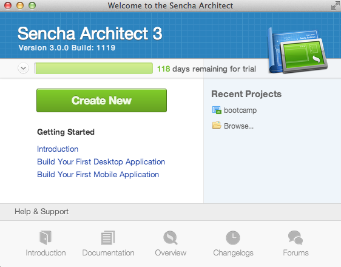
-
Choose: starter apps > Task List
Sencha Architect will start with a default working app: The Task List.
-
Press the Save button
Save the project under: htdocs/advancedtheming/. Give it the project name: tasklist
-
Press the Settings button
Set the url prefix to: http://localhost/advancedtheming/tasklist
See [lab8_setup].

18.2. Creating and extending from a Sencha theme
-
In the toolbox, filter on Themes
-
Select the Neptune based theme and drag this into the Project Inspector > Resources
When it worked correct, Sencha Architect will ask you if you want to apply this theme. Click Yes. In your Project Inspector > Resources you will see MyNeptuneTheme(applied).
-
Rename the theme
Select the MyNeptuneTheme and in the config panel change the name to:
DarkTheme.
-
Select the Globals tab
-
Create a color palette
Filter for base-color. Click the color, and in the color picker, select the colors below and add these to the palette:
-
#474747
-
#373737
-
#313131
-
#232323
-
#dddddd
-
#94fd8a
-
#60a500
-
Create the base-color
Still in the color palette, ivoked from the base-color property, select the color #313131 in the palette and press ok.
-
Create the toolbar background color
Filter for: toolbar background and change the white color to the color #474747.
-
Create the panel body background
Filter for: panel body background and change the white color to the color #474747.
-
Create the panel body color
Filter for: panel body color and change the black color to the color #dddddd.
-
Create the row bg color
Filter for: row bg color and change the white color to the color #373737.
-
*Create the row border color
Filter for: row border color and change the gray color to the color #232323.
-
Create the grid column header color
Filter for: grid column header color and change the grid column header color to #232323.
-
Create the grid column header font
Filter for: grid columm header font and change it to bold 11px Helvetica
-
Create the grid header background color
Filter for: grid header background color and change the grid column header color to #dddddd.
-
Create the grid row cell over background color
Filter for: grid row cell over background color and change the color to #232323
-
Create the grid cell selected background color
Filter for grid cell selected background color and change the color to #232323
Can't find the properties you are filtering for?
Make sure you select the Resources > DarkTheme
and click the Globals tab.
18.3. Creating styles for templates (tpls)
-
In the project inspector, select Views > priority > tpl
-
Change the image height
In the code view, give the image an attribute +height="10".
-
Select the tpl styles
In the Project Inspector select Views > mainView > detailsView > tpl2.
In the config panel, click on the plus button (+) next to the scss property. After that, press the icon with the arrow to the right.
See [lab8_tpl1] and [lab8_tpl2].
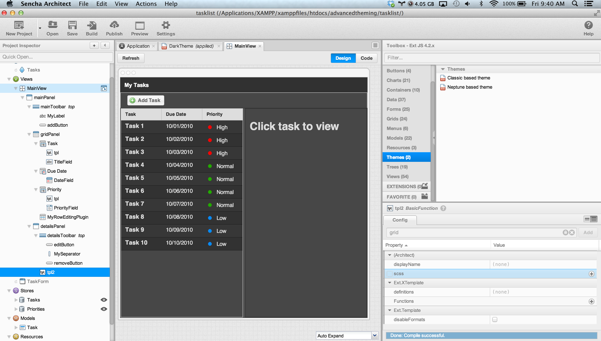
-
Open the tpl code
Under tpl2_ there should be a +scss file, double click to open it in the code editor view.
-
Add the custom styles
Enter the following styles (See [code8_tpl]) and wait till Architect finished compiling.
h1 {
margin: 30px 10px 0;
text-shadow: #000 0.1em 0.1em 0.3em;
}
p {
margin: 10px;
text-shadow: #000 0.1em 0.1em 0.3em;
}
See [lab8_tpl3].
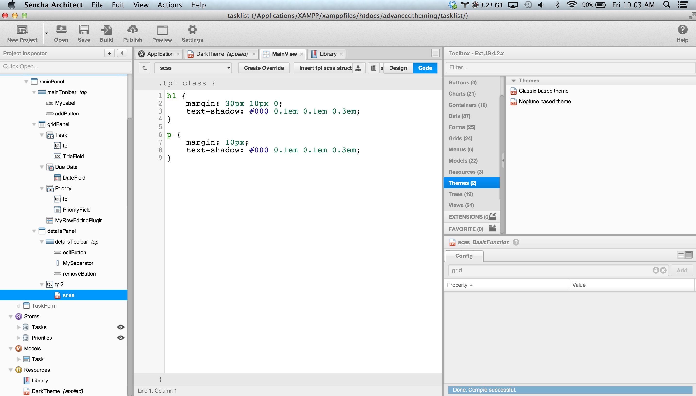
+
Note: save your Architect project after Architect
is done with compiling...
-
Preview the TaskList app in your browser
18.4. Create a new button UI
-
In design mode, select the add task button
-
Select the Skins tab
-
Click on the + button to create a new UI for the button
-
Click on the R button to rename the new UI
-
Create the background color
Filter for: background color and change the color+ to #60a500.
Note currently there is a bug that does not apply
background colors to buttons in toolbars.
18.5. Reusing themes
-
Save the theme to toolbox
//////BONUS extending from Base theme
////include::../extjs/_lab9.asciidoc[]
Appendix A: Setup Guide
Lab materials
Required software
|
Tip
|
Some steps require that you work on the command line:
Windows users can open the Command Prompt:
Start > Run. Type: cmd and press ok
Mac users can open the Terminal:
+Applications > Utils > Terminal |
Java Run-time environment
Download Java 7 JDK and run the installer
http://www.oracle.com/technetwork/java/javase/downloads/jdk7-downloads-1880260.html
Sencha Cmd
With Sencha Cmd you can start scaffolding a new project, minifying and deploying your application to production. In case you have the old Sencha SDK tools installed please remove it.
Download Sencha Cmd and run the installer:
http://www.sencha.com/products/sencha-cmd/download
Remember where you installed the Sencha Cmd directory and the version number you
are using. By default, the installation path is:
Windows: C:\Users\Me\bin\Sencha\Cmd\{cmd-vers}
Mac OS X: ~/bin/Sencha/Cmd/{cmd-vers}
Linux: ~/bin/Sencha/Cmd/{cmd-vers}
Enter the following command in your console or terminal: sencha.
It should prompt all the Sencha commands and options.
In case you don’t see anything you can close your terminal and you will need to add Sencha Cmd to your class path:
Windows users:
Start > Control Panel > Performance and Maintenance > System
In your system properties click on the Advanced tab.
Click the Environment Variables button.
Edit the classpath variable or create a new variable called: classpath
Add the following value and save:
C:\Users\Me\bin\Sencha\Cmd\{cmd-vers}
Make sure you are entering the correct path and version number.
Mac users:
Make hidden files visible.
To achieve this, type the following command in your terminal:
defaults write com.apple.finder AppleShowAllFiles TRUE
killall Finder
(running these commands with FALSE will hide the files again)
Now open ~.bash_profile.
Add the following commands and save the file:
export PATH=/Users/username/bin/Sencha/Cmd/{cmd-vers}:$PATH
Make sure you are entering the correct path and version number.
Sencha Architect 3.0
Download the installer for the preview version from:
http://sc13-live.sencha.com/
Run the installer, and login by using the (or creating) Sencha forum ID.
IDE or Editor
You can use any IDE or Editor you like.
I’m using: Sublime Text (for it\' simplicity) - http://www.sublimetext.com/
|
Tip
|
I recommend that your editor includes JavaScript syntax checking similar to JSLint. |
Modern browser
Sencha Touch requires you use a modern browser, like Google Chrome, Safari, IE10 or Firefox 24+
I prefer Safari or Google Chrome.
To install Google Chrome just download and run the installer:
https://www.google.com/intl/en/chrome/browser/
Ruby, Sass and Compass
Check if Ruby, Sass or Compass is installed with the following commands for the
command line:
ruby -v
compass -v
sass -v
It should prompt you with a version number.
If it does not output a version number you will need to install it.
To install Sass and Compass to your development environment, you will need to have Ruby installed. This is automatically installed for Mac OS X users. Windows users can download and run the installer from: http://rubyinstaller.org
(Do not download the Ruby 2.x version.)
Enter the following commands in the command line:
gem install compass
Wait until the process is completed. It will take a few minutes before the
command completes and the command prompt returns.
gem install sass -v 3.1.1
Wait until the process is completed
Enter the following commands in the command line:
sudo gem install compass
Wait until the process is completed. It will take a few minutes before the
command completes and the command prompt returns.
sudo gem install sass -v 3.1.1
Wait until the process is completed